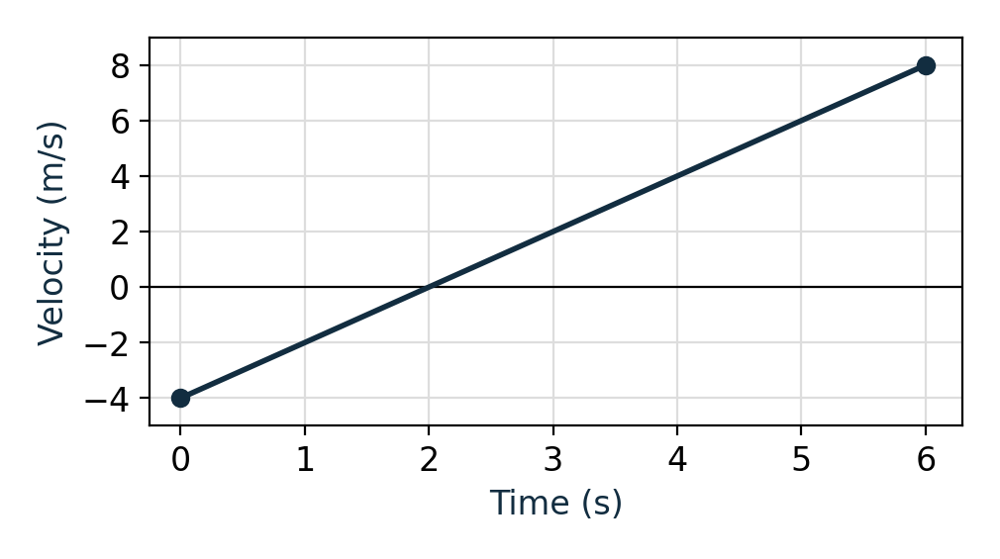
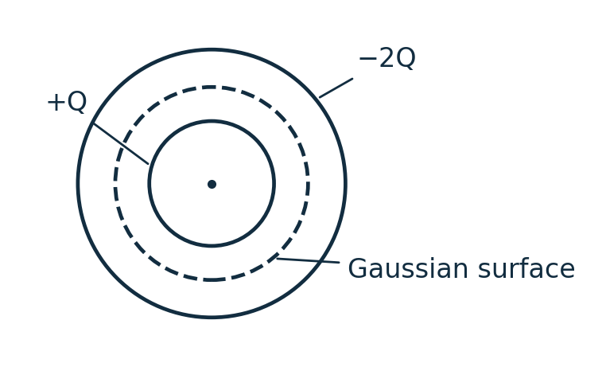
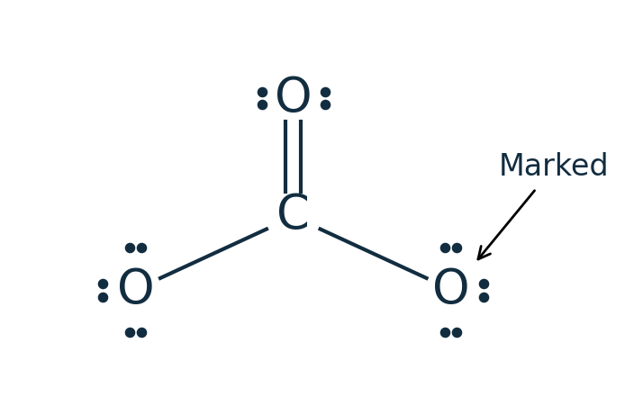
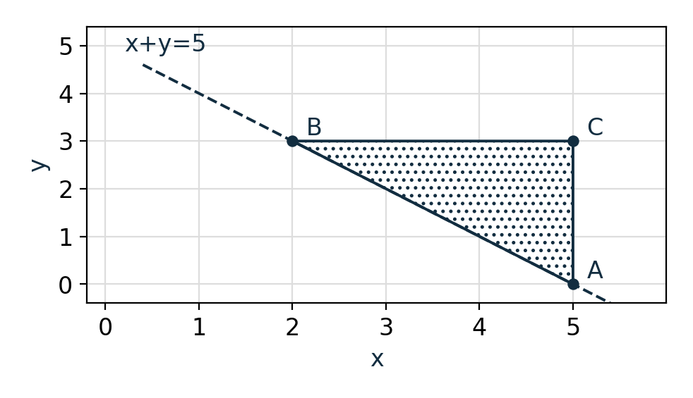

COMEDK UGET Test 5
180 minutes · 180 questions · +1 per correct answer · No negative marking
Physics
Q001. A thin lens in air has power +5 D. It forms an upright virtual image three times the object height. How far in front of the lens is the object?
A) 20/3 cm
B) 30 cm
C) 60 cm
D) 40/3 cm
Worked solution
Answer: (D) 40/3 cm
Why and working: The focal length is 20 cm. With u=−d and v=−3d from positive magnification, the lens equation gives 1/f=−1/(3d)+1/d=2/(3d), so d=40/3 cm.
Why not the others: (A) it uses only f/3. (B) would put the object beyond the focus and give a real image. (C) it uses the image scaling as the object position.
Q002. The plotted straight velocity trace is for uniform acceleration. At what time does the particle return to its position at t=0?

A) 2 s
B) 3 s
C) 4 s
D) 6 s
Worked solution
Answer: (C) 4 s
Why and working: The graph has v(0)=−4 m/s, crosses zero at 2 s and rises by 2 m/s each second. Displacement is −4t+t², so the nonzero root is 4 s.
Why not the others: (A) zero velocity means reversal, not return. (B) negative and positive areas are still unequal. (D) the positive area is larger by then.
Q003. At fixed radius from a long uniformly charged wire, its line charge density is tripled. How does the field magnitude change?
A) It stays fixed
B) It triples
C) It becomes nine times as large
D) It drops to one third
Worked solution
Answer: (B) It triples
Why and working: For a coaxial Gaussian cylinder, E(2πrL)=λL/ε₀. At fixed r the field is linear in λ.
Why not the others: (A) only the radius is fixed. (C) charge appears to the first power. (D) larger charge produces larger field at fixed r.
Q004. A 6 μF and a 3 μF capacitor are in series, and this branch is parallel to 4 μF. What is the equivalent capacitance?
A) 13 μF
B) 9 μF
C) 2 μF
D) 6 μF
Worked solution
Answer: (D) 6 μF
Why and working: The series branch is 6×3/(6+3)=2 μF. Adding the 4 μF parallel branch gives 6 μF.
Why not the others: (A) adds every capacitor as though parallel. (B) uses only the two nominal values in series. (C) this is the equivalent of the series branch alone.
Q005. A particle starts at (2,−1) m and moves with constant velocity (−3,4) m/s. At what y coordinate does it cross x=0?
A) 5/3 m
B) 8/3 m
C) 1/3 m
D) −11/3 m
Worked solution
Answer: (A) 5/3 m
Why and working: The x coordinate reaches zero when 2−3t=0, at t=2/3 s. Then y=−1+4(2/3)=5/3 m.
Why not the others: (B) omits the initial y. (C) uses the wrong time or velocity component. (D) reverses the vertical displacement.
Q006. Two identical cells of emf E and internal resistance r feed a load R, first in aiding series and then in parallel. Which load makes the terminal current the same?
A) R=2r
B) R=r/2
C) All positive R
D) R=r
Worked solution
Answer: (D) R=r
Why and working: Series gives 2E/(R+2r). Parallel gives E/(R+r/2). Equating and cancelling E yields 2R+r=R+2r.
Why not the others: (A) at 2r the series current is larger. (B) at r/2 the parallel current is larger. (C) the effective emf and resistance both change.
Q007. A long straight wire can carry either of two currents and a second parallel wire stays in place at fixed current. How can the force reverse direction without changing magnitude?
A) Reverse both currents and keep magnitudes
B) Reverse only the first current and keep its magnitude
C) Double the first current without reversing it
D) Halve both currents without reversing them
Worked solution
Answer: (B) Reverse only the first current and keep its magnitude
Why and working: The force magnitude per length is proportional to the product of current magnitudes. Reversing only one switches between same-direction attraction and opposite-direction repulsion.
Why not the others: (A) the relative sense stays the same. (C) this changes magnitude without changing relative directions. (D) this reduces the product without reversing force.
Q008. A 5 kg block lies on a horizontal surface with μ_s=0.4 and μ_k=0.3. Take g=10 m/s². A horizontal pull slowly rises from 12 N to 25 N. What is friction at those two pulls?
A) 20 N, then 15 N
B) 15 N, then 20 N
C) 12 N, then 15 N
D) 12 N, then 20 N
Worked solution
Answer: (C) 12 N, then 15 N
Why and working: The static limit is 0.4×50=20 N, so friction matches 12 N initially. At 25 N it slides, and kinetic friction is 0.3×50=15 N.
Why not the others: (A) static friction need not reach its maximum. (B) kinetic friction applies only after motion begins. (D) 20 N is the static limit.
Q009. An ideal transformer has N_p:N_s=5:1 and 50 Hz input. Which output quantity is unchanged in going from primary to secondary?
A) Frequency
B) Voltage amplitude
C) Current amplitude for a loaded secondary
D) The number of turns
Worked solution
Answer: (A) Frequency
Why and working: Both windings experience the same periodic core flux, so the induced voltages have the same frequency. Turns set the voltage ratio.
Why not the others: (B) secondary voltage is smaller. (C) an ideal loaded transformer changes current inversely to voltage. (D) the turns differ by assumption.
Q010. A +4 D and a −4 D thin lens are placed in contact. Within the ideal thin-lens model, what happens to rays arriving parallel to the common axis?
A) They focus 25 cm beyond the pair
B) They diverge from a virtual focus 25 cm away
C) They converge twice as strongly as with the positive lens alone
D) They emerge parallel
Worked solution
Answer: (D) They emerge parallel
Why and working: In contact the signed powers add to zero. A zero-power combination produces no net convergence of parallel rays.
Why not the others: (A) uses only the positive lens. (B) uses only the negative lens. (C) adds magnitudes instead of signed powers.
Q011. An object of mass m strikes an identical stationary object head-on. They stick. If the incident speed is v, what common speed follows?
A) v
B) v/2
C) 2v
D) 0
Worked solution
Answer: (B) v/2
Why and working: Momentum is initially mv and finally 2mu. Conservation gives u=v/2.
Why not the others: (A) the moving mass doubles. (C) this inverts the mass ratio. (D) sticking does not destroy momentum.
Q012. Two equally charged infinite sheets have charge densities +σ and −σ. What is the field just outside the pair, on either exterior side?
A) σ/ε₀ toward the negative sheet
B) Zero
C) σ/(2ε₀) away from the positive sheet
D) 2σ/ε₀ toward the positive sheet
Worked solution
Answer: (B) Zero
Why and working: Each sheet produces σ/(2ε₀) in magnitude. Exterior contributions oppose and cancel; they reinforce only between the sheets.
Why not the others: (A) this is the interior field. (C) counts only one sheet. (D) double-counts and uses the wrong direction.
Q013. An isolated air-filled parallel-plate capacitor is charged to Q. A dielectric slab fills the entire gap and increases C to 3C. Using Q for the free charge of one plate, what is the effective magnitude of the net surface charge next to each conductor, including bound charge, in the ideal uniform-field model?
A) Q
B) 2Q/3
C) Q/3
D) 3Q
Worked solution
Answer: (C) Q/3
Why and working: With no external connection the free charge is still Q. The filled capacitor’s voltage and field fall to one third of the original values. Since the field is proportional to the net plane charge in this model, the combined free and opposing bound charge has magnitude Q/3.
Why not the others: (A) this is the free charge alone. (B) this is the magnitude of the opposing bound charge. (D) field and net charge fall rather than rise.
Q014. A constant net force F acts on a particle of mass m from rest. What rotational quantity plays the role of m in predicting angular speed from a constant torque about a fixed axis?
A) Moment of inertia about that axis
B) Radius only
C) Angular momentum
D) Rotational kinetic energy
Worked solution
Answer: (A) Moment of inertia about that axis
Why and working: Use a=F/m for translation and α=τ/I for fixed-axis rotation. I determines angular acceleration in response to torque.
Why not the others: (B) both mass and its distribution affect rotation. (C) this is the resulting motion quantity analogous to linear momentum. (D) energy is an output, not the inertia parameter.
Q015. A 12 V ideal source drives 2 Ω in series with a parallel pair of 6 Ω and 3 Ω. What current runs through the 3 Ω branch?
A) 3 A
B) 2 A
C) 4 A
D) 1 A
Worked solution
Answer: (B) 2 A
Why and working: The parallel pair equals 2 Ω. Total current is 12/4=3 A and the pair has 6 V across it. The 3 Ω branch carries 6/3=2 A.
Why not the others: (A) this is the source current. (C) divides the full source voltage by 3 Ω. (D) this is the 6 Ω branch current.
Q016. A current loop's magnetic moment is along +x and the uniform field along +z. Along which axis does the torque vector point?
A) −y
B) +y
C) +x
D) +z
Worked solution
Answer: (A) −y
Why and working: Torque is m×B. In a right-handed system x×z=−y, perpendicular to both vectors.
Why not the others: (B) reverses the cross product. (C) torque cannot point along m here. (D) torque cannot point along B here.
Q017. Two satellites have circular orbits around the same planet, at radii r and 4r. How do their orbital speeds compare?
A) The outer moves at one quarter
B) The outer satellite moves at half the inner speed
C) They move at the same speed
D) The outer moves at twice the speed
Worked solution
Answer: (B) The outer satellite moves at half the inner speed
Why and working: Equate gravity to centripetal force, giving v=√(GM/r). Quadrupling radius halves v.
Why not the others: (A) uses the squared-speed ratio as speed. (C) equal central mass is not enough. (D) the square-root dependence is inverse.
Q018. A glass prism in air has apex angle 45° and refractive index √2. The ray enters through the first face along its normal. What happens at the second face?
A) It reaches the critical angle and the limiting refracted ray is along the face
B) It emerges along the second-face normal
C) The second-face angle is zero because entry was normal
D) It necessarily reflects at an angle larger than critical
Worked solution
Answer: (A) It reaches the critical angle and the limiting refracted ray is along the face
Why and working: The first interior angle is zero, so the second is 45° since r₁+r₂=45°. The glass-to-air critical angle satisfies sin c=1/√2, hence c=45°. The limiting refraction angle is 90°.
Why not the others: (B) the internal ray is not parallel to the second normal. (C) the face normals differ by the prism angle. (D) the incidence equals the threshold.
Q019. The diagram shows a centred Gaussian sphere and two uniformly charged concentric spherical shells. Their total charges are +Q and −2Q as labelled. What is the Gaussian sphere's flux?

A) −Q/ε₀
B) +Q/ε₀
C) −2Q/ε₀
D) Zero
Worked solution
Answer: (B) +Q/ε₀
Why and working: The dashed surface encloses the inner +Q shell and excludes the outer −2Q shell. Gauss's law gives +Q/ε₀.
Why not the others: (A) counts the external shell as enclosed. (C) uses only the external shell. (D) the surface does not enclose zero charge.
Q020. A soap film spans a frame and has two air–liquid interfaces. At fixed surface tension γ, what work is required to increase the area of one face by ΔA?
A) γΔA
B) γΔA/2
C) 4γΔA
D) 2γΔA
Worked solution
Answer: (D) 2γΔA
Why and working: Each face grows by ΔA. The total new surface area is 2ΔA, and surface work equals tension times total new area.
Why not the others: (A) counts one face. (B) divides instead of counting both interfaces. (C) counts each face twice.
Q021. A capacitor stores 18 mJ at 6 V. At the same capacitance what energy is stored at 2 V?
A) 2 mJ
B) 6 mJ
C) 54 mJ
D) 162 mJ
Worked solution
Answer: (A) 2 mJ
Why and working: At fixed C, energy CV²/2 scales with voltage squared. The factor is (2/6)²=1/9, giving 2 mJ.
Why not the others: (B) applies linear voltage scaling. (C) reverses the voltage ratio without squaring. (D) inverts the squared ratio.
Q022. A bridge has two divider arms between the same supply nodes. Why does its detector show zero at balance despite current in the arms?
A) The entire bridge is disconnected
B) The detector terminals must both be at zero absolute potential
C) Its two terminals are at equal potential
D) Each arm has zero resistance
Worked solution
Answer: (C) Its two terminals are at equal potential
Why and working: At balance, both arms divide the same supply voltage into equal fractions at the detector nodes. Zero potential difference gives no detector current.
Why not the others: (A) the supply can drive both arms. (B) only the difference must be zero. (D) the divider contains finite resistance.
Q023. An ideal vacuum gap separates a hot wall from a cooler wall. Which heat transfer remains possible directly across the gap?
A) Thermal radiation
B) Bulk convection only
C) Conduction by the trapped gas only
D) Both gas conduction and convection
Worked solution
Answer: (A) Thermal radiation
Why and working: Electromagnetic radiation carries energy through vacuum. Ordinary conduction and convection across the gap require matter.
Why not the others: (B) there is no moving fluid. (C) an ideal vacuum contains no gas. (D) both mechanisms require a medium.
Q024. A galvanometer gives full-scale deflection at 2 mA and has resistance 98 Ω. What shunt is needed for a 0.100 A ammeter range?
A) 98 Ω
B) 2 Ω
C) 49 Ω
D) 1 Ω
Worked solution
Answer: (B) 2 Ω
Why and working: At full scale the meter voltage is 0.002×98=0.196 V. The shunt carries 0.100−0.002=0.098 A, so R_s=0.196/0.098=2 Ω.
Why not the others: (A) this is the meter resistance. (C) does not use the branch current. (D) would carry twice the required shunt current.
Q025. In a compound microscope at the same adjustment, the objective magnification stays fixed. The eyepiece focal length is halved, using the normal-adjustment approximation. What happens to total angular magnification?
A) It halves
B) It is unchanged
C) Its magnitude doubles
D) It quadruples
Worked solution
Answer: (C) Its magnitude doubles
Why and working: For normal adjustment the eyepiece contributes D/f_e. The objective factor is fixed, so halving f_e doubles the product.
Why not the others: (A) reverses inverse dependence. (B) the eyepiece contributes even with the same objective. (D) only one factor doubles.
Q026. A gas completes a closed loop on a pressure–volume diagram and does +30 J net work. What is its net heat input?
A) −30 J
B) Zero
C) +30 J
D) +60 J
Worked solution
Answer: (C) +30 J
Why and working: The internal energy is a state function, so ΔU=0 over the loop. From ΔU=Q−W, Q=W=+30 J.
Why not the others: (A) has the sign appropriate to net heat loss. (B) work and heat can both be nonzero on a cycle. (D) does not follow from the first law.
Q027. A reflecting telescope uses a concave objective mirror of focal length 1.2 m and an eyepiece of focal length 30 mm. In normal adjustment, which magnification magnitude and explanation are correct?
A) 40, because the light must pass through a thick refracting objective
B) 4, with the mirror preventing all diffraction
C) 0.025, because objective focal length is in the denominator
D) 40, with a mirror objective avoiding chromatic aberration from refraction
Worked solution
Answer: (D) 40, with a mirror objective avoiding chromatic aberration from refraction
Why and working: Convert 1.2 m to 1200 mm and divide by 30 mm. A mirror focuses by reflection, avoiding refraction-driven chromatic aberration at the objective.
Why not the others: (A) the objective is a mirror. (B) the ratio is 40 and diffraction persists. (C) the focal-length ratio is inverted.
Q028. A charged grain carrying −3e absorbs a particle of charge +2e and then emits an electron. What is the resulting charge of the grain?
A) −2e
B) −e
C) 0
D) +e
Worked solution
Answer: (C) 0
Why and working: Absorption increases charge by 2e, leaving −e. Emitting an electron removes a charge −e and therefore raises the grain’s charge by e to zero.
Why not the others: (A) uses the electron charge itself rather than its removal. (B) accounts for absorption only. (D) would require an additional positive change.
Q029. Tones of 256 Hz and 260 Hz are played simultaneously. How many beat maxima occur per second on average?
A) 4
B) 2
C) 258
D) 516
Worked solution
Answer: (A) 4
Why and working: The beat frequency is the magnitude of the difference, 4 Hz. There is one loudness maximum per beat period.
Why not the others: (B) uses half the difference. (C) this is the mean pitch frequency. (D) this is the sum of the tone frequencies.
Q030. At distance r a positive point charge creates potential V relative to infinity. What work does the electric field do moving a positive test charge q from r to 2r?
A) −qV/2
B) +qV
C) +qV/2
D) −qV
Worked solution
Answer: (C) +qV/2
Why and working: The potential falls from V to V/2. Potential energy change is −qV/2, so work by the field is its negative, +qV/2.
Why not the others: (A) this is the potential energy change. (B) the final potential remains nonzero. (D) uses the wrong change and sign.
Q031. Two equal-length wires of the same material and carrier density carry equal steady currents. Y has twice X's diameter. Compare their drift speeds.
A) Y has half X's drift speed
B) The drift speeds are equal
C) Y has four times X's drift speed
D) Y has one quarter X's drift speed
Worked solution
Answer: (D) Y has one quarter X's drift speed
Why and working: Area scales with diameter squared. With I=neAv_d and equal I and n, Y's fourfold area makes drift speed a quarter.
Why not the others: (A) uses diameter instead of area. (B) larger area changes speed at fixed current. (C) reverses the inverse dependence.
Q032. A ball is projected at 20 m/s with initial velocity components 12 m/s horizontal and 16 m/s vertical. Ignoring air and using g=10 m/s², where horizontally is it at maximum height?
A) 38.4 m
B) 19.2 m
C) 12.8 m
D) 25.6 m
Worked solution
Answer: (B) 19.2 m
Why and working: At the top vertical velocity is zero, so t=16/10=1.6 s. Horizontal speed stays 12 m/s, giving x=19.2 m.
Why not the others: (A) this is the range at return to launch level. (C) this is the maximum vertical height. (D) uses the initial vertical speed for horizontal displacement.
Q033. A compass near a current wire returns to its original heading when the circuit is opened. What does this comparison isolate?
A) A permanent magnetisation of the compass caused by the wire
B) A magnetic contribution associated with current in the wire
C) A wind generated by the wire
D) An irreversible change in Earth's magnetic field
Worked solution
Answer: (B) A magnetic contribution associated with current in the wire
Why and working: The change follows whether current is present. Restoring the original heading when current stops isolates the magnetic field contribution of that current.
Why not the others: (A) a persistent change would not disappear on opening the circuit. (C) this is a magnetic-deflection experiment. (D) the original heading returns.
Q034. A solenoid is compared with a bar magnet. Which feature of their external fields supports the analogy?
A) Only a solenoid has closed field lines
B) The solenoid field is purely radial everywhere
C) Both possess a single isolated magnetic pole
D) Both have a two-pole pattern with field lines returning from the north end to the south end outside
Worked solution
Answer: (D) Both have a two-pole pattern with field lines returning from the north end to the south end outside
Why and working: A finite steady solenoid creates a return field outside, similar to the external dipole pattern of a bar magnet.
Why not the others: (A) both have closed lines. (B) the field changes direction in space. (C) the analogy involves two ends.
Q035. Two carts carry equal loads on the same level surface. One has functioning wheels; the second has locked wheels and skids. Why does the first usually take less tractive force at steady speed?
A) A rolling wheel removes all normal force between cart and ground
B) Rolling losses are usually smaller than sliding losses, and lubrication of bearings can reduce axle losses further
C) Static friction at the contact necessarily does more negative work than sliding friction
D) Lubrication makes locked wheels roll by cancelling gravity
Worked solution
Answer: (B) Rolling losses are usually smaller than sliding losses, and lubrication of bearings can reduce axle losses further
Why and working: At steady speed traction balances frictional losses. Rolling causes much less relative sliding at the road contact, and lubricated bearings reduce shaft losses.
Why not the others: (A) the ground still supports the cart. (C) the ideal rolling contact is instantaneously at rest relative to the road. (D) lubricants do not cancel weight.
Q036. A 25-turn loop of area 0.020 m² has its normal initially along a 0.40 T field. It turns through 120° in 0.10 s. What is the magnitude of mean induced emf?
A) 1.0 V
B) 2.0 V
C) 3.0 V
D) 4.0 V
Worked solution
Answer: (C) 3.0 V
Why and working: Flux per turn changes from +0.008 Wb to −0.004 Wb because cos120°=−1/2. Thus the magnitude is 25×0.012/0.10=3.0 V.
Why not the others: (A) uses only the final flux magnitude. (B) uses only the initial flux. (D) treats the change like a 180° flip.
Q037. A sinusoidal current has rms value 3 A. What is its positive peak?
A) 3 A
B) 3√2 A
C) 3/√2 A
D) 6 A
Worked solution
Answer: (B) 3√2 A
Why and working: The mean of sin² over a cycle is 1/2, so I_rms=I_peak/√2. Multiply the rms value by √2.
Why not the others: (A) reports rms instead of peak. (C) divides rather than multiplies. (D) uses a factor of two instead of √2.
Q038. In an isolated planar collision, equal-mass pucks initially move east and north at equal speed u. Afterwards puck A moves east at speed 2u. What is the direction of puck B after the collision?
A) Northeast
B) Due east
C) Due north
D) Northwest
Worked solution
Answer: (D) Northwest
Why and working: Take initial total momentum per unit puck mass as (u,u). Puck A takes (2u,0), so puck B has components (−u,u), which point northwest.
Why not the others: (A) the leftover x component is negative. (B) there is a positive remaining y component. (C) the remaining x component is nonzero.
Q039. An ideal charging capacitor has negligible fringing. A surface between its plates covers half the plate area, parallel to the plates. What displacement current passes through it if total wire current is I?
A) I/2
B) I
C) 2I
D) Zero
Worked solution
Answer: (A) I/2
Why and working: Over the full plate area uniform dE/dt gives displacement current I. The electric-flux change over half that area is half as large.
Why not the others: (B) applies to the whole gap cross-section. (C) reverses the area scaling. (D) there need not be conduction current for electric flux to change.
Q040. An upright virtual image in a convex mirror is half the object's height. The real object is 20 cm in front. What is the mirror's focal length in the Cartesian sign convention?
A) −20 cm
B) +10 cm
C) −10 cm
D) +20 cm
Worked solution
Answer: (D) +20 cm
Why and working: u=−20 cm and m=−v/u=1/2 give v=+10 cm. Then 1/f=1/v+1/u=1/10−1/20=1/20.
Why not the others: (A) a convex mirror has positive f here. (B) this reports the virtual image distance. (C) this is neither the image position nor the focal length.
Q041. A wheel has mass 5 kg and moment of inertia 0.80 kg·m² about its axle. What is its radius of gyration?
A) 0.40 m
B) 0.16 m
C) 2.5 m
D) 2.0 m
Worked solution
Answer: (A) 0.40 m
Why and working: The equivalent distance k satisfies I=Mk². Thus k=√(0.80/5)=√0.16=0.40 m.
Why not the others: (B) this is k² in m². (C) takes a reciprocal and uses the wrong units. (D) does not normalise by mass before taking the root.
Q042. At a certain instant a circular wavefront in a shallow uniform region has radius 2 m. After 1 s, one forward on-axis secondary wavelet from the old front extends another 0.5 m. What is the radius of the new outward wavefront by Huygens’ construction?
A) 0.5 m
B) 1.5 m
C) 2.5 m
D) 4 m
Worked solution
Answer: (C) 2.5 m
Why and working: Equal wavelet speeds create a common forward envelope. Each radial front point moves outward by the radius 0.5 m of its secondary wavelet, so the new circular front is at 2.5 m.
Why not the others: (A) this is the wavelet radius alone. (B) uses the inward envelope. (D) doubles the radius without using the wavelet advance.
Q043. At fixed above-threshold frequency, the measured photoelectric current changes as the collecting electrode voltage becomes more positive, then reaches a plateau. What explains the plateau?
A) The positive voltage removes the metal's work function
B) The incident photons cease arriving
C) Nearly all emitted electrons are collected, so increasing voltage can no longer raise their number per second
D) The electrons gain zero kinetic energy when the voltage is positive
Worked solution
Answer: (C) Nearly all emitted electrons are collected, so increasing voltage can no longer raise their number per second
Why and working: Increasing attractive voltage improves collection. At saturation the emission rate limits the collected charge per second.
Why not the others: (A) arrival rate and work function do not follow collector voltage this way. (B) illumination continues at the plateau. (D) a positive collector can accelerate electrons.
Q044. A liquid of fixed surface tension and density rises in a narrow tube to height h with contact angle 0°. In a second tube of half the radius the contact angle is 60°. What height is expected?
A) h/2
B) 2h
C) 4h
D) h
Worked solution
Answer: (D) h
Why and working: For capillary rise h=2γ cos θ/(ρgr). Halving r doubles the factor 1/r, while cos60° halves the numerator. The effects cancel.
Why not the others: (A) keeps the contact-angle change only. (B) keeps the radius change only. (C) applies both factors in the same direction.
Q045. Why were rare, very large deflections more decisive for Rutherford's nuclear model than the observation that most alpha particles pass almost straight?
A) They show the entire atom has a uniform strong field
B) They require occasional strong repulsion in a small region, ruling out a diffuse spread of positive charge
C) They imply electrons provide the main backward impulse
D) They show every alpha particle hits a hard surface
Worked solution
Answer: (B) They require occasional strong repulsion in a small region, ruling out a diffuse spread of positive charge
Why and working: Most paths miss the compact positively charged region, but close encounters there can give large Coulomb impulses. Diffuse positive charge cannot readily account for those extremes.
Why not the others: (A) a uniform strong field would affect many paths. (C) electrons are too light for the characteristic large backward deflections. (D) the experiment gives a distribution of deflections.
Q046. Which force principally holds nearby neutrons and protons together inside a nucleus?
A) Coulomb attraction between all nucleons
B) Gravitational attraction
C) The long-range force from bound atomic electrons
D) The strong nuclear interaction
Worked solution
Answer: (D) The strong nuclear interaction
Why and working: The nuclear interaction acts strongly at very short separations between nucleons. It can bind neutrons even though they have no net charge.
Why not the others: (A) neutrons are electrically neutral and protons repel electrostatically. (B) gravity is negligible at this scale. (C) atomic electrons do not bind nucleons to one another.
Q047. The absolute temperature of an ideal blackbody is doubled. Which change follows from Wien's displacement law?
A) The wavelength doubles
B) Peak wavelength is unchanged while only area matters
C) The wavelength falls to one sixteenth
D) The wavelength of peak emission halves
Worked solution
Answer: (D) The wavelength of peak emission halves
Why and working: Wien's law fixes λ_peak T. Doubling T halves the peak wavelength.
Why not the others: (A) uses direct scaling. (B) temperature shifts the spectral peak. (C) the fourth power belongs to total radiated power per area.
Q048. Why does raising temperature increase the conductivity of an intrinsic semiconductor in the usual qualitative model?
A) More electrons are promoted across the gap, creating mobile electrons and holes
B) The valence band becomes permanently empty at any increased temperature
C) The material loses all holes as temperature rises
D) Each electron's charge increases
Worked solution
Answer: (A) More electrons are promoted across the gap, creating mobile electrons and holes
Why and working: Thermal excitation promotes electrons to the conduction band and leaves holes in the valence band. More mobile carriers generally raise conductivity.
Why not the others: (B) only a fraction of valence electrons are excited. (C) holes are created along with electrons. (D) elementary charge does not change.
Q049. Two fixed equal positive charges lie at x=−a and x=+a. A positive test charge lies at x=a/2. Which force statement is correct?
A) Net force points right and the right charge contributes three times as much
B) Net force is zero by symmetry
C) Net force points left and the right charge contributes nine times the left charge's force magnitude
D) Net force points left but the contributions are equal
Worked solution
Answer: (C) Net force points left and the right charge contributes nine times the left charge's force magnitude
Why and working: Distances to right and left are a/2 and 3a/2. Each repels the test charge away from itself. The right contribution is 3²=9 times stronger and points left.
Why not the others: (A) reverses direction and uses linear distance scaling. (B) only the midpoint is symmetric. (D) unequal distances produce unequal inverse-square forces.
Q050. Two points on one uniformly rotating disc are 2 cm and 8 cm from its centre. Which pair of ratios describes outer to inner angular speed and linear speed?
A) 1 and 4
B) 4 and 1
C) 4 and 4
D) 1 and 16
Worked solution
Answer: (A) 1 and 4
Why and working: Both points turn through identical angles in the same time, so ω is common. Since v=ωr, tangential speed ratio is 8/2=4.
Why not the others: (B) confuses angular speed with linear speed. (C) angular speed is common. (D) linear speed is proportional to r, not r².
Q051. At a point, the electric potential from a dipole alone is −3 V. Two additional point charges at equal distances from the point produce +8 V and −5 V there individually. What is the resultant potential?
A) +10 V
B) −16 V
C) +6 V
D) 0 V
Worked solution
Answer: (D) 0 V
Why and working: Electric potential is a scalar. The signed sum is −3+8−5=0 V. Cancellation in potential does not require the field vectors to cancel.
Why not the others: (A) this treats the negative source contribution incorrectly. (B) this adds all magnitudes with negative sign. (C) this flips the sign of the dipole contribution.
Q052. Two samples of the same carrier density and charge magnitude are driven by equal potential differences. Sample Y is twice as long and has three times the cross-sectional area of X. Their measured currents are equal. Find μ_Y/μ_X.
A) 3/2
B) 1
C) 6
D) 2/3
Worked solution
Answer: (D) 2/3
Why and working: Use E=V/L and I=neAμV/L. Equal currents at fixed n and V mean A_Y μ_Y/L_Y=A_X μ_X/L_X, so the mobility ratio is 2/3.
Why not the others: (A) reverses the geometric correction. (B) same current does not establish same mobility with unequal geometry. (C) multiplies area and length ratios instead of dividing.
Q053. A frictionless banked road has radius 40 m and tan θ=1/4. With g=10 m/s², what speed needs no lateral friction?
A) 10 m/s
B) 5 m/s
C) 20 m/s
D) 100 m/s
Worked solution
Answer: (A) 10 m/s
Why and working: Vertical balance gives N cos θ=mg, and the horizontal component gives N sin θ=mv²/r. Divide to obtain v²=rg tan θ=100 m²/s².
Why not the others: (B) roughly halves the resulting speed without changing given data. (C) uses a larger bank or radius. (D) this is the numerical squared speed.
Q054. The field at the centre of a circular loop is B. What field is obtained by winding two coincident turns of the same radius with the same current sense?
A) 2B
B) B
C) 4B
D) Zero
Worked solution
Answer: (A) 2B
Why and working: Each turn gives μ₀I/(2R) in the same axial direction. Superposition adds their magnitudes.
Why not the others: (B) omits the second turn. (C) linear superposition does not square the count. (D) cancellation requires opposite senses.
Q055. The field of a short bar magnet is measured on the positive and negative ends of its axial line at equal distances from the centre. How do the field vectors compare in the dipole approximation?
A) They have equal magnitudes and both point along the dipole moment
B) They have equal magnitudes and opposite directions
C) The north-side value is twice the south-side value
D) Both point opposite to the dipole moment
Worked solution
Answer: (A) They have equal magnitudes and both point along the dipole moment
Why and working: Outside the north end the field points away from north; outside the south end it points toward south. Both are along the moment from south to north, with equal r.
Why not the others: (B) the two spatial locations reverse but the axial directions coincide. (C) the axial magnitude depends symmetrically on distance. (D) opposite direction belongs to the equatorial field.
Q056. A uniform thin ring has mass M and radius R. What is its standard moment of inertia about the axis through the centre perpendicular to its plane?
A) MR²/2
B) MR²
C) MR²/12
D) 2MR²/5
Worked solution
Answer: (B) MR²
Why and working: Every part of the ideal thin ring lies at perpendicular distance R from the named axis. The standard value is MR².
Why not the others: (A) this is the corresponding uniform disc value. (C) this coefficient appears for a rod about a central perpendicular axis. (D) this is a uniform solid sphere value.
Q057. A changing flux induces 8 V across an open coil. Connecting a resistor closes the circuit. Neglect coil resistance and self-induction. Which load draws 2 A while the same flux change continues?
A) 16 Ω
B) 0.25 Ω
C) 4 Ω
D) 10 Ω
Worked solution
Answer: (C) 4 Ω
Why and working: Faraday's law fixes the source emf at 8 V for the same prescribed flux change. Ohm's law gives R=8/2=4 Ω.
Why not the others: (A) multiplies by current. (B) inverts the required resistance. (D) adds quantities of unequal dimensions.
Q058. A series circuit has R=12 Ω, X_L=9 Ω and X_C=4 Ω. Which impedance magnitude follows?
A) 17 Ω
B) 13 Ω
C) 25 Ω
D) 12 Ω
Worked solution
Answer: (B) 13 Ω
Why and working: The signed net reactance is 5 Ω, perpendicular in phasor space to R. Thus Z=√(12²+5²)=13 Ω.
Why not the others: (A) adds perpendicular components as scalars. (C) adds the capacitive reactance without its minus sign. (D) ignores a nonzero net reactance.
Q059. A spherical soap bubble and a liquid drop have equal radii and equal surface tension. Compare their excess internal pressures.
A) They are equal
B) The drop has twice the bubble's excess pressure
C) The bubble has twice the drop's excess pressure
D) The bubble has four times the drop's excess pressure
Worked solution
Answer: (C) The bubble has twice the drop's excess pressure
Why and working: A liquid drop has one interface, giving 2γ/r. The thin bubble film has two interfaces, giving 4γ/r.
Why not the others: (A) the number of interfaces differs. (B) the bubble has more interfaces. (D) two interfaces double the excess.
Q060. A transverse wave travels horizontally along a rope while marked points on the rope move vertically. Which description follows?
A) Individual rope elements travel horizontally with each wave crest
B) The wave has no energy transport
C) The rope elements oscillate perpendicular to wave propagation
D) The motion is longitudinal because particles move in the rope
Worked solution
Answer: (C) The rope elements oscillate perpendicular to wave propagation
Why and working: The direction of local displacement is vertical, at right angles to horizontal propagation, which defines a transverse wave.
Why not the others: (A) the shape propagates while elements oscillate locally. (B) waves can transport energy without net mass transport. (D) longitudinal displacement would be parallel to propagation.
Chemistry
Q061. A 250 g solution is 12% glucose by mass. Water alone evaporates until the solution is 20% glucose by mass. How much water is lost?
A) 100 g
B) 20 g
C) 30 g
D) 150 g
Worked solution
Answer: (A) 100 g
Why and working: Glucose mass stays 0.12×250=30 g. The final total is 30/0.20=150 g. The missing 100 g was water.
Why not the others: (B) the percentage point change is not a fixed fraction of initial solvent mass. (C) 30 g is the solute mass. (D) 150 g is the remaining solution.
Q062. In the electrophilic substitution of benzene, which event restores aromaticity after the electrophile has bonded?
A) Addition of another electrophile at the same carbon
B) Loss of a proton from every ring carbon
C) Permanent conversion to a cyclohexane ring
D) Loss of H⁺ from the carbon bonded to the electrophile
Worked solution
Answer: (D) Loss of H⁺ from the carbon bonded to the electrophile
Why and working: The σ complex is not aromatic. Removing H⁺ from the substituted site lets its C–H electron pair restore the π system.
Why not the others: (A) another electrophile does not restore the interrupted conjugation. (B) only the attacked site needs deprotonation. (C) substitution preserves the aromatic ring.
Q063. The standard reduction potential for Zn²⁺/Zn is negative. Compared directly in a standard cell with the standard hydrogen electrode, where does Zn act?
A) At the cathode, where it is reduced
B) At the anode, where it is oxidised
C) At both electrodes simultaneously
D) As an inert salt-bridge ion source
Worked solution
Answer: (B) At the anode, where it is oxidised
Why and working: The hydrogen reference is 0 V, higher than the stated zinc potential. Its cathodic reduction couples to zinc oxidation at the anode.
Why not the others: (A) reduction favours the higher potential here. (C) each half-cell has a distinct net role. (D) Zn is an active electrode reactant.
Q064. For 2A → B, concentration of B rises from 0.10 M to 0.16 M in 20 s. What is the average disappearance rate of A, with fixed volume?
A) 0.0060 M/s
B) 0.0030 M/s
C) 0.0015 M/s
D) 0.012 M/s
Worked solution
Answer: (A) 0.0060 M/s
Why and working: B appears at (0.16−0.10)/20=0.0030 M/s. Two moles of A are consumed per mole of B, doubling the magnitude.
Why not the others: (B) this is appearance of B and the normalised reaction rate. (C) divides the stoichiometric factor instead of multiplying. (D) counts four A per B.
Q065. Which electrophile bonds to the ring during ordinary nitration of benzene?
A) NO₂⁺
B) NO₂⁻
C) NO₃⁻
D) NH₄⁺
Worked solution
Answer: (A) NO₂⁺
Why and working: The acidic nitrating medium generates nitronium ion, NO₂⁺. Benzene's π electrons attack its electron-deficient nitrogen.
Why not the others: (B) nitrite is not the electrophile. (C) nitrate is not the species that forms the C–N bond. (D) ammonium is not a nitrogen dioxide electrophile.
Q066. Which element is a d-block metal but is conventionally excluded from the transition elements because both the atom and its usual ion have complete d subshells?
A) Fe
B) Mn
C) Ti
D) Zn
Worked solution
Answer: (D) Zn
Why and working: Zinc is [Ar]3d¹⁰4s² and its normal Zn²⁺ ion retains 3d¹⁰. It lacks an incomplete d subshell in those conventional cases.
Why not the others: (A) common iron ions are d⁵ or d⁶. (B) Mn and typical Mn ions have incomplete d subshells. (C) Ti has incomplete d occupation in its atom or common ionic states.
Q067. An octahedral complex has two bidentate ligands and all remaining sites occupied by water. How many ligand molecules or ions are attached per metal centre, counting each chelate once?
A) Six
B) Four
C) Two
D) Eight
Worked solution
Answer: (B) Four
Why and working: The chelating ligands occupy four sites. Two water molecules fill the two remaining sites. Counting ligand entities gives two chelates plus two waters.
Why not the others: (A) this counts all donor sites as separate particles. (C) omits the water ligands. (D) counts more entities than available sites.
Q068. Which side group is installed on benzene by Friedel–Crafts acylation with ethanoyl chloride?
A) −CH₂CH₃
B) −OCOCH₃
C) −CHO
D) −COCH₃
Worked solution
Answer: (D) −COCH₃
Why and working: Ethanoyl chloride supplies an acyl electrophile CH₃CO⁺. Benzene bonds at the acyl carbon, leaving the substituent −COCH₃.
Why not the others: (A) corresponds to ethyl alkylation. (B) would bond the ring to oxygen. (C) the ethanoyl group retains its methyl.
Q069. Which pair of compounds are constitutional isomers of 2-bromobutane, one a straight-chain primary bromide and one a branched primary bromide?
A) 2-bromopropane and 1-bromopropane
B) 1-bromobutane and 2-bromo-2-methylpropane
C) 2-bromobutane and 1-bromo-2-methylpropane
D) 1-bromobutane and 1-bromo-2-methylpropane
Worked solution
Answer: (D) 1-bromobutane and 1-bromo-2-methylpropane
Why and working: Both listed primary isomers have formula C₄H₉Br and place bromine on terminal CH₂. Only the second has a branched skeleton.
Why not the others: (A) both are C₃ compounds. (B) the branched bromide in this pair is tertiary. (C) the first is the original secondary bromide.
Q070. A straight-chain four-carbon aldehyde is reduced to its corresponding alcohol without changing the carbon skeleton. Which systematic name and alcohol class describe the product?
A) Butan-2-ol, secondary
B) 2-Methylpropan-1-ol, primary
C) Butan-1-ol, secondary
D) Butan-1-ol, primary
Worked solution
Answer: (D) Butan-1-ol, primary
Why and working: Reduction converts the terminal carbonyl into CH₂OH, retaining the four-carbon chain. The hydroxyl carbon has one carbon neighbour, so the alcohol is primary.
Why not the others: (A) instead would come from the ketone at C2. (B) would require a branched starting skeleton. (C) the terminal carbon is connected to one carbon neighbour.
Q071. Which substituent normally directs further electrophilic attack mainly to a meta position on a monosubstituted benzene?
A) −CH₃
B) −CHO
C) −OH
D) −OCH₃
Worked solution
Answer: (B) −CHO
Why and working: The formyl group withdraws electron density through conjugation. Ortho and para attack give especially unfavourable resonance contributors, so meta is favoured.
Why not the others: (A) methyl usually directs ortho/para. (C) OH donates by resonance and directs ortho/para. (D) methoxy is an ortho/para donor.
Q072. Which condensed structure corresponds to 3-methylbutanal?
A) CH₃CH₂CH(CH₃)CHO
B) CH₃COCH(CH₃)CH₃
C) CH₃CH(CH₃)CH₂CHO
D) CH₃CH₂CH₂COOH
Worked solution
Answer: (C) CH₃CH(CH₃)CH₂CHO
Why and working: The aldehyde carbon begins the four-carbon chain as C1. Counting from CHO puts CH₂ at C2 and the methyl branch at C3.
Why not the others: (A) the branch is on C2. (B) contains an internal ketone. (D) contains a carboxylic acid.
Q073. Which structural feature makes N-methylethanamine a secondary amine?
A) Its longest carbon chain has two carbons
B) Its N is bonded to three carbon groups
C) Its N has methyl and ethyl groups plus one H
D) Its N is attached to a carbon with two carbon neighbours
Worked solution
Answer: (C) Its N has methyl and ethyl groups plus one H
Why and working: Secondary amines have two carbon groups attached directly to nitrogen. N-methyl replaces one H of ethanamine, leaving CH₃CH₂NHCH₃.
Why not the others: (A) counting carbons in a chain does not classify amines. (B) three directly attached groups would make it tertiary. (D) classification counts groups on N, not at the neighbouring carbon.
Q074. Which statement correctly places benzene toxicity in a laboratory safety context?
A) Long-term exposure is associated with increased cancer risk, so routine exposure should be minimised
B) Ring aromaticity makes benzene harmless to inhale
C) Benzene is only hazardous when diluted with water
D) All aromatic compounds have exactly the same toxicity as benzene
Worked solution
Answer: (A) Long-term exposure is associated with increased cancer risk, so routine exposure should be minimised
Why and working: Benzene is a known carcinogen. Aromatic stabilisation is a chemical structure property, separate from biological hazard.
Why not the others: (B) stability does not ensure safety. (C) benzene is hazardous without water. (D) hazards differ among aromatic compounds.
Q075. Which classification follows for a sugar with five carbons and a terminal aldehyde in its conventional open-chain form?
A) Ketohexose
B) Aldohexose
C) Aldopentose
D) Ketopentose
Worked solution
Answer: (C) Aldopentose
Why and working: Five carbons give the pentose class. A terminal CHO classifies the open chain as an aldose, so the combined name is aldopentose.
Why not the others: (A) both carbon count and carbonyl class are different. (B) hexose requires six carbons. (D) an aldehyde differs from an internal ketone.
Q076. Why do dissolved carbon dioxide bubbles appear when a sealed carbonated drink is opened at the same temperature?
A) The CO₂ partial pressure drops, reducing its equilibrium solubility
B) The liquid instantly loses all solvent molecules
C) The gas becomes more soluble as external partial pressure falls
D) Opening changes CO₂ into a different compound that cannot dissolve
Worked solution
Answer: (A) The CO₂ partial pressure drops, reducing its equilibrium solubility
Why and working: At fixed temperature, Henry's law relates equilibrium dissolved concentration positively to CO₂ partial pressure. When pressure drops, excess dissolved gas escapes.
Why not the others: (B) most solvent remains liquid. (C) the pressure dependence has the opposite sign. (D) no chemical identity change is needed.
Q077. A mixture of fine sand and completely dissolved salt in water is filtered. Which classification explains what passes the filter?
A) The salt–water system remains a solid compound
B) The filtrate is a homogeneous salt solution
C) The sand passes as part of a homogeneous solution
D) A filter changes dissolved salt into a pure liquid element
Worked solution
Answer: (B) The filtrate is a homogeneous salt solution
Why and working: Sand stays a heterogeneous separate solid and is retained. Dissolved ions pass with the water, which is a single liquid solution phase.
Why not the others: (A) salt and water form a mixture. (C) the sand particles are a separate phase. (D) filtration separates phases without changing atoms.
Q078. A galvanic reaction transfers one electron per equation as written. At 298 K its E° is 0.1184 V. For what reaction quotient is E = 0, assuming 0.0592 V as the base-ten Nernst factor?
A) 10
B) 1/100
C) 1
D) 100
Worked solution
Answer: (D) 100
Why and working: At zero cell voltage 0.1184=0.0592 log₁₀Q. The logarithm is 2, so Q=100.
Why not the others: (A) its logarithm gives half the required voltage change. (B) the logarithm would be negative. (C) Q=1 leaves E=E°.
Q079. At fixed reactant concentrations, which change usually makes a larger fraction of collisions exceed the same activation energy?
A) Raise temperature
B) Add an inert dye at unchanged temperature without any kinetic effect
C) Reduce temperature
D) Use a catalyst and require the barrier itself to stay identical
Worked solution
Answer: (A) Raise temperature
Why and working: Higher temperature shifts the kinetic-energy distribution toward larger energies and tends to increase the fraction above the unchanged barrier.
Why not the others: (B) an inert additive under the stated conditions has no effect. (C) cooling lowers the energetic tail. (D) a catalyst usually works by offering a different, lower barrier.
Q080. Which observation in a discharge tube showed that cathode rays carried negative charge?
A) They consisted of helium atoms at rest
B) They were deflected toward a positively charged plate
C) They only travelled in the direction of gravity
D) They carried a fixed positive sign in every field
Worked solution
Answer: (B) They were deflected toward a positively charged plate
Why and working: Unlike neutral matter, charged rays respond to electric fields. Attraction to the positive plate indicates negative charge.
Why not the others: (A) this neither identifies the rays nor their sign. (C) the field deflection was electric. (D) a positive beam would bend the opposite way.
Q081. Why can transition metals have stronger metallic bonding near the middle of a series than at a closed-d-shell end?
A) Their atomic number drops toward the middle
B) They have no valence electrons at a closed-shell end
C) More incompletely filled valence d orbitals and unpaired electrons can contribute to bonding
D) Filled d subshells always strengthen metallic bonding more than partially occupied ones
Worked solution
Answer: (C) More incompletely filled valence d orbitals and unpaired electrons can contribute to bonding
Why and working: The availability of several valence electrons, including d electrons in many members, favours stronger metallic cohesion. A closed d shell contributes differently and trends are approximate.
Why not the others: (A) the atomic number increases throughout. (B) outer s electrons remain. (D) closed d shells commonly show much weaker d contribution.
Q082. A complex is known from its formula to have a d⁰ metal ion. A student explains its colour as ordinary d–d excitation at that metal. What is the flaw?
A) A d⁰ ion always contains five unpaired d electrons
B) Colour requires every ligand to be monodentate
C) There are no occupied d levels from which to start a d–d transition
D) Every coloured compound has exactly one d electron
Worked solution
Answer: (C) There are no occupied d levels from which to start a d–d transition
Why and working: A d–d absorption requires a d electron that can be promoted to a higher split d orbital. A d⁰ species may still have colour from other transitions.
Why not the others: (A) d⁰ means zero d electrons. (B) denticity does not establish the origin of colour. (D) multiple d-electron arrangements and other transitions can produce colour.
Q083. What historical observation made atomic number a better organising variable than atomic mass in the periodic table?
A) Atomic masses are identical across a period
B) The number of neutrons alone fixes valence behaviour
C) Element properties align by nuclear charge even when mass order gives anomalies such as iodine and tellurium
D) Reordering by mass removes all anomalous chemical groupings
Worked solution
Answer: (C) Element properties align by nuclear charge even when mass order gives anomalies such as iodine and tellurium
Why and working: Atomic number tracks electron count in a neutral atom and hence repeating valence configurations. Ordering Te before I by Z preserves their chemical families despite their masses.
Why not the others: (A) different elements have different atomic masses. (B) neutron count can vary within one isotope family. (D) mass ordering caused some anomalies.
Q084. In a typical SN2 substitution at a stereogenic carbon, what happens to its local geometry when the leaving group is replaced?
A) It inverts as the nucleophile attacks from the rear
B) It must be retained because the carbon skeleton is unchanged
C) It always becomes planar permanently
D) It racemises because a long-lived carbocation must form first
Worked solution
Answer: (A) It inverts as the nucleophile attacks from the rear
Why and working: Backside attack overlaps with the antibonding orbital of the leaving C–X bond. The geometry at the reacting tetrahedral carbon inverts.
Why not the others: (B) backside displacement changes relative geometry. (C) the resulting carbon can remain tetrahedral. (D) a direct SN2 event does not require an intermediate carbocation.
Q085. Which statement explains why ethanol mixes well with water even though its carbon chain is nonpolar?
A) Its carbon atoms all become dissolved metal ions
B) Its small ethyl group is outweighed by favourable hydrogen bonding through OH
C) It has no polar bond
D) Water converts all ethanol into ethoxide under ordinary mixing
Worked solution
Answer: (B) Its small ethyl group is outweighed by favourable hydrogen bonding through OH
Why and working: Ethanol's hydroxyl oxygen can accept hydrogen bonds and O–H can donate them. With a short chain this supports miscibility.
Why not the others: (A) ethanol remains mostly molecular. (C) the hydroxyl group is polar. (D) ordinary mixing does not give quantitative deprotonation.
Q086. The diagram shows a Lewis contributor of a carbonate ion. What is the formal charge on the marked oxygen, and what is the overall charge obtained from this diagram?

A) 0 on the marked O, −2 overall
B) −1 on the marked O, −2 overall
C) −2 on the marked O, −2 overall
D) −1 on the marked O, −1 overall
Worked solution
Answer: (B) −1 on the marked O, −2 overall
Why and working: A singly bound oxygen with three lone pairs has formal charge 6−6−1=−1. Two such oxygens give −2; the double-bonded oxygen and central carbon have zero formal charge.
Why not the others: (A) a singly bonded O with six nonbonding electrons has −1. (C) use half the bonding pair in the formal-charge count. (D) the second single-bond oxygen also contributes −1.
Q087. An alcohol X yields a ketone on oxidation, whereas its constitutional isomer Y yields a three-carbon aldehyde under controlled oxidation. Which pair can be X and Y?
A) Propan-2-ol and propan-1-ol
B) Propan-1-ol and propan-2-ol
C) Ethanol and propan-1-ol
D) 2-methylpropan-2-ol and butan-1-ol
Worked solution
Answer: (A) Propan-2-ol and propan-1-ol
Why and working: Y gives propanal, identifying propan-1-ol. Its secondary isomer propan-2-ol is oxidised at the OH-bearing carbon to propanone.
Why not the others: (B) reverses secondary and primary starting compounds. (C) the alcohols have different formulas. (D) the aldehyde from butan-1-ol would have four carbons.
Q088. Which functional group must be reduced to prepare aniline directly from nitrobenzene without altering the ring?
A) −NO₂ to −NH₂
B) −NO₂ to −OH
C) −NH₂ to −NO₂
D) −NO₂ to −COOH
Worked solution
Answer: (A) −NO₂ to −NH₂
Why and working: Reduction replaces the nitro oxygen content by increasing hydrogen on the same nitrogen, yielding the amino group attached to the ring.
Why not the others: (B) this gives a phenolic rather than amino group. (C) this is the reverse direction. (D) this substitutes a different element at the connecting atom.
Q089. A closed container is heated through a conductive wall. Which exchange with its surroundings is allowed by the description?
A) Energy may cross the boundary, but matter does not
B) Matter crosses but energy cannot
C) Neither matter nor energy crosses
D) The boundary must transfer equal amounts of energy and matter
Worked solution
Answer: (A) Energy may cross the boundary, but matter does not
Why and working: A closed system retains matter. Heat transfer through its wall is energy exchange, so it is not necessarily isolated.
Why not the others: (B) this confuses open and closed systems. (C) heating explicitly transfers energy. (D) there is no mass transfer.
Q090. The open-chain structure of D-fructose has CH₂OH at C1. Which structural feature determines that this compound is a ketohexose rather than an aldohexose?
A) Its reference OH at C5 is on the right
B) Its carbonyl is at C2 of its six-carbon chain
C) Its C1 has an OH group and therefore is an aldehyde
D) Its highest stereocentre is at the carbonyl carbon
Worked solution
Answer: (B) Its carbonyl is at C2 of its six-carbon chain
Why and working: A ketohexose has six carbons and a ketone carbonyl. Fructose has C=O at internal C2, with CH₂OH at C1. D/L classification answers a different structural question.
Why not the others: (A) this gives the D designation but does not locate the carbonyl. (C) a CH₂OH group is an alcohol, not an aldehyde. (D) the trigonal carbonyl carbon is not a stereocentre.
Q091. In a substitutional solid solution of two metals, what occupies the sites of the original lattice?
A) Each added atom must form a distinct liquid droplet
B) Only the host atoms occupy sites; all solute atoms must be interstitial
C) Atoms of either metal can occupy lattice sites distributed within one phase
D) Each crystal contains one solute atom at most
Worked solution
Answer: (C) Atoms of either metal can occupy lattice sites distributed within one phase
Why and working: Substitutional means solute atoms replace some host atoms at ordinary lattice sites. Mixing can occur throughout a single solid phase.
Why not the others: (A) a solid solution is a single solid phase. (B) that describes interstitial dissolution. (D) many sites may contain solute atoms.
Q092. In a closed vessel with liquid water and its vapour at a stable equilibrium, what continues microscopically?
A) Only evaporation until the liquid disappears
B) Only condensation even though amounts remain constant
C) No molecules move between phases
D) Evaporation and condensation at equal rates
Worked solution
Answer: (D) Evaporation and condensation at equal rates
Why and working: Dynamic equilibrium preserves macroscopic amounts because molecules pass both ways equally rapidly.
Why not the others: (A) net evaporation would decrease liquid amount. (B) one-way condensation would decrease vapour. (C) equilibrium does not stop molecular exchange.
Q093. Adding an integer multiple of a balanced cell reaction multiplies ΔG° and the transferred electron count n. What happens to E°?
A) It is multiplied by the same factor
B) It is unchanged
C) It is divided by the factor
D) Its sign reverses
Worked solution
Answer: (B) It is unchanged
Why and working: Since E°=−ΔG°/(nF), multiplying both numerator and n by the same positive factor cancels out.
Why not the others: (A) potential is intensive under equation scaling. (C) both charge and energy scale. (D) reversal, rather than positive scaling, changes the sign.
Q094. An elementary step is A + A + B → products. What are its molecularity and the order predicted by the elementary rate expression?
A) 2 and 2
B) 3 and 2
C) 2 and 3
D) 3 and 3
Worked solution
Answer: (D) 3 and 3
Why and working: One elementary event brings together two A molecules and one B. Mass action gives k[A]²[B] for this step, so both numbers are 3.
Why not the others: (A) counts kinds rather than reacting molecules. (B) the A exponent is two and B adds another one. (C) molecularity counts all three entities.
Q095. In Cl₂ + 2OH⁻ → Cl⁻ + ClO⁻ + H₂O, what happens to chlorine?
A) One chlorine is reduced from 0 to −1 and the other oxidised from 0 to +1
B) Both chlorine atoms are oxidised from 0 to +1
C) Both are reduced to −1
D) Oxygen changes from −2 to 0 and chlorine is unchanged
Worked solution
Answer: (A) One chlorine is reduced from 0 to −1 and the other oxidised from 0 to +1
Why and working: Elemental chlorine starts at 0. Chloride is −1, while x−2=−1 in hypochlorite gives x=+1. The same element undergoes both changes.
Why not the others: (B) chloride is reduced. (C) hypochlorite chlorine is oxidised. (D) oxygen remains −2 in the oxygen-bearing species.
Q096. Within the same oxidation state, why are isoelectronic-radius arguments unsuitable for comparing the usual M²⁺ ions of two different first-row transition elements?
A) Having different proton numbers makes the ions necessarily isoelectronic
B) First-row divalent ions all have twelve total electrons
C) Having the same charge does not imply that the two ions have the same electron count
D) Two ions with the same charge must have exactly the same ionic radius
Worked solution
Answer: (C) Having the same charge does not imply that the two ions have the same electron count
Why and working: Electron count equals atomic number minus two for M²⁺. Changing element changes atomic number and therefore changes electron count. Same charge alone cannot justify assuming fixed electron count.
Why not the others: (A) different proton numbers at the same ionic charge give different electron counts. (B) divalent removal does not fix a universal count. (D) charge alone does not determine radius.
Q097. What is the metal oxidation state denoted by the Roman numeral in hexaamminecobalt(III) chloride?
A) +6
B) −3
C) 0
D) +3
Worked solution
Answer: (D) +3
Why and working: The Roman numeral gives oxidation state. Ammine is neutral, so the cobalt complex cation also has charge +3 in this case.
Why not the others: (A) six is the ligand count. (B) the sign is positive. (C) neutral ligands do not make the transition metal neutral.
Q098. Which purification method separates two miscible liquids whose boiling temperatures are close but measurably different?
A) Simple filtration
B) Separating funnel without an added solvent
C) Sublimation of both liquids
D) Fractional distillation
Worked solution
Answer: (D) Fractional distillation
Why and working: A fractionating column gives repeated vapour–liquid equilibration, enriching the lower-boiling component in the rising vapour.
Why not the others: (A) dissolved liquids pass through a filter together. (B) miscible liquids form no separate layers. (C) sublimation is direct solid-to-vapour transfer.
Q099. Pure R rotates plane-polarised light clockwise by 12° under the stated conditions. What net angle should an equimolar R/S mixture produce at the same total concentration and path length?
A) +12°
B) −12°
C) +6°
D) 0°
Worked solution
Answer: (D) 0°
Why and working: Enantiomers have equal and opposite specific rotations. Half the concentration contributes +6° and half −6°, summing to zero.
Why not the others: (A) treats the sample as all R. (B) treats the sample as all S. (C) drops the rotation from S.
Q100. The OH-bearing carbon in cyclohexanol is bonded to two other carbons and one H. How is this alcohol classified?
A) Primary
B) Secondary
C) Tertiary
D) Phenolic
Worked solution
Answer: (B) Secondary
Why and working: Alcohol class counts carbon neighbours of the saturated carbon bonded to OH. In cyclohexanol that carbon has two ring neighbours.
Why not the others: (A) one neighbour would be needed. (C) three neighbours would be needed. (D) the ring is saturated rather than aromatic.
Q101. Which pair are respectively a phenol and a benzyl alcohol derivative?
A) 4-methylphenol and 4-methylbenzyl alcohol
B) Benzyl alcohol and 4-methylphenol
C) Phenoxyethane and 4-methylphenol
D) Cyclohexanol and phenol
Worked solution
Answer: (A) 4-methylphenol and 4-methylbenzyl alcohol
Why and working: Phenols have OH on an aromatic carbon. Benzyl alcohols have OH on an sp³ CH₂ side-chain carbon directly connected to the ring.
Why not the others: (B) the order of classes is reversed. (C) the first is an ether and the second a phenol. (D) the saturated ring is not phenolic.
Q102. Why does sodium hydrogen carbonate effervesce with ethanoic acid?
A) It makes hydrogen gas by direct oxidation of all carbon atoms
B) It produces oxygen from ethanoic acid
C) Transfer of a proton produces carbonic acid, which gives CO₂ and water
D) Ethanoic acid crystallises when bicarbonate is present
Worked solution
Answer: (C) Transfer of a proton produces carbonic acid, which gives CO₂ and water
Why and working: HCO₃⁻ accepts H⁺ to give H₂CO₃, which decomposes into CO₂ and H₂O. Escaping CO₂ causes bubbles.
Why not the others: (A) hydrogen gas is not the ordinary product. (B) no oxygen evolution is involved. (D) effervescence comes from an escaping gas.
Q103. Why is a typical aliphatic secondary amine able to donate a hydrogen bond to another amine, while a tertiary amine lacks that donor site?
A) The tertiary amine loses its nitrogen lone pair completely
B) The secondary amine is always ionised in a pure sample
C) The tertiary amine always contains a terminal O–H group
D) The secondary amine has an N–H bond; the tertiary amine has none
Worked solution
Answer: (D) The secondary amine has an N–H bond; the tertiary amine has none
Why and working: The donor needs hydrogen bonded to N. Secondary amines retain one N–H; tertiary amines can accept with a lone pair but cannot donate through N–H.
Why not the others: (A) the tertiary amine still has a lone pair. (B) ionisation is not required to donate. (C) amines need not contain oxygen.
Q104. For a pure compound X, a 10 g sample contains 6 g of one element. A second pure sample of X has mass 35 g. Which prediction and law go together?
A) 21 g by the law of multiple proportions
B) 21 g of that element by the law of definite proportions
C) 6 g by the law of conservation of mass
D) 29 g by the law of combining gas volumes
Worked solution
Answer: (B) 21 g of that element by the law of definite proportions
Why and working: A pure compound always has the same elemental mass fraction, here 6/10=0.60. The larger sample therefore contains 0.60×35=21 g of that element.
Why not the others: (A) multiple proportions compares different compounds of the same elements. (C) conservation does not require different sample sizes to contain equal amounts. (D) these are masses rather than gas volumes.
Q105. Which feature explains why sucrose is classified as a non-reducing disaccharide in the standard tests?
A) Both components are noncarbohydrates
B) Its glucose component retains a free hemiacetal group
C) It has a free aldehydic carbon in its usual unhydrolysed structure
D) The glycosidic bond uses the anomeric centres of both components
Worked solution
Answer: (D) The glycosidic bond uses the anomeric centres of both components
Why and working: The linkage joins the anomeric carbon of glucose to that of fructose. Neither unit can open as a free reducing end in intact sucrose.
Why not the others: (A) its two components are monosaccharides. (B) the glucose anomeric position is involved in the linkage. (C) the intact molecule does not supply that reducing group.
Q106. For an ideal A–B liquid with x_A=0.60, what is p_A if pure A has p°_A=90 mmHg?
A) 36 mmHg
B) 150 mmHg
C) 90 mmHg
D) 54 mmHg
Worked solution
Answer: (D) 54 mmHg
Why and working: Raoult's law gives p_A=x_A p°_A = 0.60×90=54 mmHg.
Why not the others: (A) uses x_B with A's vapour pressure. (B) divides instead of multiplying. (C) uses the pure-A value.
Q107. A neutral isotope contains 18 neutrons and has mass number 35. What are the atomic number and electron count?
A) 18 and 17
B) 17 and 17
C) 17 and 18
D) 35 and 18
Worked solution
Answer: (B) 17 and 17
Why and working: Mass number is Z+N, so Z=35−18=17. Neutrality makes the electron count equal to the proton count.
Why not the others: (A) 18 counts neutrons. (C) neutrality fixes electrons to 17. (D) 35 counts nucleons, not protons.
Q108. Solution X has conductivity twice Y's but molar concentration four times Y's. What is Λ_X/Λ_Y with the same units for both?
A) 2
B) 4
C) 1/2
D) 8
Worked solution
Answer: (C) 1/2
Why and working: Molar conductivity equals conductivity divided by concentration in consistent units. The ratio is 2/4=1/2.
Why not the others: (A) uses conductivity alone. (B) confuses the concentration ratio with the molar conductivity ratio. (D) multiplies instead of dividing by concentration.
Q109. The rate law is r=k[A][B]². By what factor does rate change when [A] is doubled and [B] is halved at the same temperature?
A) 2
B) 1/2
C) 1
D) 4
Worked solution
Answer: (B) 1/2
Why and working: Multiplying [A] by 2 gives a factor 2; halving [B] contributes (1/2)²=1/4. The product is 1/2.
Why not the others: (A) keeps only the A factor. (C) incorrectly treats B as first order. (D) misreads the effect of reducing B.
Q110. A neutral main-group atom has electron arrangement 2,8,7. Where does the modern periodic table place it?
A) Period 2, group 17
B) Period 3, group 7
C) Period 3, group 17
D) Period 7, group 3
Worked solution
Answer: (C) Period 3, group 17
Why and working: Three occupied principal shells give period 3. Seven valence electrons in a p-block atom correspond to group 17.
Why not the others: (A) period tracks occupied shells. (B) group 7 is in the d block. (D) interchanges the meanings of the numbers.
Q111. Why does a metal surface such as nickel catalyse some hydrogenation reactions?
A) The surface permanently raises the reaction's equilibrium constant
B) Nickel always reacts away in the first turnover
C) Adsorption brings reactants together and can weaken bonds for an alternative pathway
D) A metal catalyst makes every collision effective regardless of energy
Worked solution
Answer: (C) Adsorption brings reactants together and can weaken bonds for an alternative pathway
Why and working: At the surface, reactants adsorb and can be activated in favourable configurations. This can lower the kinetic barrier while the catalyst is regenerated.
Why not the others: (A) equilibrium does not depend on the catalyst. (B) the active surface is regenerated over catalytic turnovers. (D) an activation barrier can still remain.
Q112. One mole of cobalt compound gives two moles of AgCl immediately with excess Ag⁺. Its empirical composition is CoCl₃·5NH₃ and coordination number is six. Which Werner formula fits?
A) [Co(NH₃)₅]Cl₃
B) [Co(NH₃)₅Cl]Cl₂
C) [Co(NH₃)₅Cl₂]Cl
D) [Co(NH₃)₅Cl₃]
Worked solution
Answer: (B) [Co(NH₃)₅Cl]Cl₂
Why and working: Two chlorides are outside and precipitate immediately. One chloride joins the five ammines in the inner sphere to complete six sites.
Why not the others: (A) predicts three external chlorides and five sites. (C) predicts one external chloride and seven sites. (D) predicts no immediate chloride precipitate.
Q113. Which bonding description applies to the ammonium chloride solid?
A) Only ionic bonding within NH₄⁺
B) Only covalent bonding between nitrogen and chloride throughout the solid
C) Covalent bonds inside NH₄⁺ and ionic attraction between NH₄⁺ and Cl⁻
D) Metallic bonds because its ions carry charge
Worked solution
Answer: (C) Covalent bonds inside NH₄⁺ and ionic attraction between NH₄⁺ and Cl⁻
Why and working: N–H bonds within the polyatomic cation share electron pairs. In the lattice oppositely charged ammonium and chloride ions attract electrostatically.
Why not the others: (A) the cation contains ordinary electron-sharing bonds. (B) chloride remains a separate counterion. (D) charged lattice ions do not imply metallic bonding.
Q114. Bromobenzene is drawn as a resonance hybrid. Which direction of electron donation accounts for partial double-bond character of its aryl C–Br bond?
A) A bromine lone pair overlaps with the adjacent ring π system
B) The aryl carbon transfers its entire σ bond to bromine to produce free bromide
C) A methyl C–H bond donates into the ring
D) Two bromine atoms form a double bond on opposite ring carbons
Worked solution
Answer: (A) A bromine lone pair overlaps with the adjacent ring π system
Why and working: The directly bonded halogen has lone pairs that can overlap with orbitals of the aromatic ring. Contributors with C=Br character account qualitatively for the stronger aryl bond.
Why not the others: (B) resonance does not dissociate the bond into ions. (C) bromobenzene has no methyl group. (D) the molecule has one bromine atom.
Q115. What is the immediate role of protonating the hydroxyl oxygen in acid-catalysed dehydration of an alcohol?
A) It turns the hydroxyl group into free oxide ion
B) It supplies the final double bond without loss of any group
C) It converts a poor OH leaving group into water as a better leaving group
D) It prevents the oxygen-containing group from leaving
Worked solution
Answer: (C) It converts a poor OH leaving group into water as a better leaving group
Why and working: A proton gives an oxonium species with OH₂ at the attachment. Departure as neutral water is easier than loss of hydroxide.
Why not the others: (A) protonation adds H⁺ rather than stripping hydrogen. (B) the elimination requires loss of a leaving group. (D) water can depart more readily.
Q116. Using the chemistry sign convention ΔU=q+w, a system absorbs 60 J and does 25 J of work on its surroundings. What is ΔU?
A) +35 J
B) +85 J
C) −35 J
D) −85 J
Worked solution
Answer: (A) +35 J
Why and working: Absorption makes q=+60 J; work done by the system makes w=−25 J. Their sum is +35 J.
Why not the others: (B) treats work done by the system as positive w. (C) assigns the wrong net sign. (D) treats heat absorbed as leaving.
Q117. In nucleophilic addition to a carbonyl compound, what feature explains attack at carbon rather than at oxygen?
A) Oxygen is the positive end of C=O
B) The polar C=O bond makes carbon electrophilic
C) The carbonyl carbon has a permanent formal negative charge
D) Nucleophiles accept electrons from oxygen rather than donate
Worked solution
Answer: (B) The polar C=O bond makes carbon electrophilic
Why and working: Oxygen attracts the shared electron density more strongly. Carbon is partially positive and accepts the attacking electron pair.
Why not the others: (A) oxygen is the more electron-rich end. (C) a neutral carbonyl need not carry formal charges. (D) a nucleophile is the electron-pair donor.
Q118. Which amine can be converted into a benzenediazonium salt in the usual cold nitrous-acid treatment?
A) N-methylaniline
B) Triethylamine
C) Acetamide
D) Aniline
Worked solution
Answer: (D) Aniline
Why and working: Aniline is a primary aromatic amine, with NH₂ directly attached to the benzene ring. The resulting arenediazonium ion can persist in cold solution.
Why not the others: (A) the aromatic amine is secondary. (B) it is tertiary and aliphatic. (C) amide nitrogen is not the required primary arylamine group.
Q119. For 2SO₂(g) + O₂(g) ⇌ 2SO₃(g), which equilibrium expression in concentrations is correct?
A) [SO₃]²/([SO₂]²[O₂])
B) [SO₃]/([SO₂][O₂])
C) [SO₂]²[O₂]/[SO₃]²
D) [SO₃]²/([SO₂][O₂]²)
Worked solution
Answer: (A) [SO₃]²/([SO₂]²[O₂])
Why and working: The products go in the numerator, reactants in the denominator, each with its balanced coefficient as exponent.
Why not the others: (B) omits two stoichiometric powers. (C) gives the reverse reaction expression. (D) assigns the exponents to the wrong reactants.
Q120. Which comparison accounts for efficient glucose storage in glycogen granules rather than depositing structural cellulose fibres in animals?
A) Glycogen and cellulose have identical unbranched linkages
B) Cellulose has the frequent α(1→6) branches
C) Glycogen is strongly branched with many ends; cellulose has aligned β-linked chains
D) Glycogen is a fructose polymer while cellulose is protein
Worked solution
Answer: (C) Glycogen is strongly branched with many ends; cellulose has aligned β-linked chains
Why and working: Glycogen branches through α(1→6) connections and supplies many chain ends for enzyme action. Cellulose uses β(1→4) bonds in long fibrous chains.
Why not the others: (A) their linkage and shape differ. (B) α(1→6) branching describes glycogen here. (D) both are glucose-based polysaccharides.
Mathematics
Q121. A differential equation is x(d²y/dx²)² + (d³y/dx³)(dy/dx) = y. What are its order and degree as written?
A) 3 and 1
B) 3 and 2
C) 2 and 2
D) 1 and 3
Worked solution
Answer: (A) 3 and 1
Why and working: The highest derivative appearing is d³y/dx³. The equation is polynomial in derivatives and that highest derivative occurs to the first power, regardless of the squared second derivative.
Why not the others: (B) the exponent two belongs to the second derivative. (C) the third derivative is also present. (D) degree and order are different attributes.
Q122. In which open quadrant are sin θ and cos θ both negative?
A) I
B) II
C) III
D) IV
Worked solution
Answer: (C) III
Why and working: On the unit circle, cosine is the x-coordinate and sine is the y-coordinate. Both are negative only in quadrant III.
Why not the others: (A) both coordinates are positive. (B) only x is negative. (D) only y is negative.
Q123. A nonzero planar vector has magnitude 5 and x-component −3. Its angle lies in quadrant II. What is its y-component?
A) 4
B) −4
C) 2
D) 5
Worked solution
Answer: (A) 4
Why and working: The squared y-component is 5²−(−3)²=16. Quadrant II has positive y, so the component is +4.
Why not the others: (B) would put the vector in quadrant III. (C) subtracts component size directly from length. (D) would require x=0.
Q124. Let A=(1,2,3) and B=(4,2,−1). What is the direction cosine of the vector from B to A along the positive z-axis?
A) 4/5
B) −4/5
C) 3/5
D) 4
Worked solution
Answer: (A) 4/5
Why and working: B to A gives A−B=(−3,0,4), whose norm is 5. Dividing the z component by the norm gives 4/5.
Why not the others: (B) this is the cosine for A to B. (C) uses the x-component magnitude. (D) omits normalisation.
Q125. What is the real part of (2+i)/(1−i)?
A) 1/2
B) 3/2
C) 1
D) −1/2
Worked solution
Answer: (A) 1/2
Why and working: Multiply numerator and denominator by 1+i. The result is (1+3i)/2, whose real part is 1/2.
Why not the others: (B) this is the imaginary coefficient. (C) fails to divide by the denominator norm squared. (D) gives the wrong sign after forming i².
Q126. A shop must buy at least 20 items of types x and y, with at least twice as many x as y. Costs are ₹4 and ₹3 per item. Which model expresses the two constraints and purchasing goal?
A) x+y≤20, x≥2y; minimise 4x+3y
B) x+y≥20, x≥2y; minimise 4x+3y
C) x+y≥20, y≥2x; minimise 4x+3y
D) x+y≥20, x≥2y; maximise 4x+3y
Worked solution
Answer: (B) x+y≥20, x≥2y; minimise 4x+3y
Why and working: The minimum count creates a lower bound on x+y. The ratio places x above 2y. Total cost is 4x+3y, so it is minimised.
Why not the others: (A) turns minimum quantity into a cap. (C) inverts the type ratio. (D) maximising cost gives the opposite purchasing goal.
Q127. A card is chosen uniformly from a standard 52-card deck. Given it is a face card (J, Q or K), what is the probability it is a heart?
A) 3/52
B) 1/13
C) 1/4
D) 3/4
Worked solution
Answer: (C) 1/4
Why and working: Conditioning restricts the equally likely outcomes to 12 face cards. Hearts contribute J, Q and K, so 3/12=1/4.
Why not the others: (A) this is the ordinary probability of a heart face card before conditioning. (B) uses a whole-deck divisor for a different event. (D) this is the complementary conditioned probability.
Q128. The number-line solution of a linear inequality extends left from a closed endpoint at −2. Which inequality has exactly that solution?
A) 3−2x>7
B) 3+2x≥−1
C) 3−2x≤−1
D) 3−2x≥7
Worked solution
Answer: (D) 3−2x≥7
Why and working: Solving 3−2x≥7 gives −2x≥4. Division by −2 reverses the sign, leaving x≤−2 and including the endpoint.
Why not the others: (A) the strict sign excludes the endpoint. (B) this gives x≥−2. (C) this gives x≥2.
Q129. For real x,y define x∼y when x−y is an integer. Which statement holds?
A) It is reflexive and symmetric but fails transitivity
B) It is an equivalence relation, and 1/4∼5/4
C) It is an equivalence relation, and 1/4∼3/4
D) It fails reflexivity because the difference is zero
Worked solution
Answer: (B) It is an equivalence relation, and 1/4∼5/4
Why and working: Zero is an integer, negating an integer preserves integrality, and adding two integer differences gives another. Thus all three tests pass and the displayed difference is −1.
Why not the others: (A) the sum of integer differences is integer. (C) the difference is −1/2. (D) zero is included among the integers.
Q130. For f(x)=√(5−x), which range corresponds to the restricted domain 1≤x≤5?
A) [0,2]
B) [1,5]
C) (0,2)
D) [2,4]
Worked solution
Answer: (A) [0,2]
Why and working: As x goes from 1 to 5 the argument decreases continuously from 4 to 0. The square root therefore decreases continuously from 2 to 0, attaining both endpoints.
Why not the others: (B) copies the input interval. (C) both endpoints occur. (D) the square root is at most 2.
Q131. Five distinct people can occupy three numbered chairs. Which expression counts arrangements?
A) 5³
B) 5×3
C) 5×4×3
D) 3!
Worked solution
Answer: (C) 5×4×3
Why and working: For the first chair there are five choices, then four, then three. Ordered positions are filled without replacement.
Why not the others: (A) reuses a person across seats. (B) omits the choice for a remaining chair. (D) ignores choice from five people.
Q132. A is a real 2×3 matrix. Let Iₙ and Oₙ mean the n×n identity and zero matrices. Which expression is defined and equal to A for every A?
A) AI₃
B) AI₂
C) AO₃
D) I₃A
Worked solution
Answer: (A) AI₃
Why and working: A has three columns, so the right identity has three rows and columns. Multiplication preserves each column.
Why not the others: (B) the inner dimensions do not agree. (C) this is the zero matrix for general A. (D) the inner dimensions of I₃A do not agree.
Q133. A has second row (2,−1,3) and corresponding cofactors (4,5,−2). What is det A?
A) 3
B) −11
C) 7
D) −3
Worked solution
Answer: (D) −3
Why and working: Expand along row 2: 2×4+(−1)×5+3×(−2)=8−5−6=−3.
Why not the others: (A) reverses the net sign. (B) does not use the alternating signs already incorporated in the cofactors. (C) uses the second term with a positive sign or omits a contribution.
Q134. In a nontrivial Pascal-triangle row, the two entries beside the initial 1 begin 5,10. Which three entries immediately follow this 10 in that same row?
A) 15, 5, 1
B) 10, 5, 1
C) 20, 15, 6
D) 10, 1, 5
Worked solution
Answer: (B) 10, 5, 1
Why and working: The entry next to 1 is the row index n by C(n,1), so n=5. The row is symmetric with six entries. Reversing the leading 1,5,10 fills the remaining entries.
Why not the others: (A) 15 comes from adding across positions into another row. (C) these do not match the reflection of the first three entries. (D) symmetry ends the row with 1.
Q135. For y=e^(cos x), what is dy/dx at x=π/2?
A) 0
B) −1
C) 1
D) −e
Worked solution
Answer: (B) −1
Why and working: Chain rule yields −e^(cos x) sin x. At π/2, cos x=0 and sin x=1, so the result is −1.
Why not the others: (A) cosine in the exponent is not the derivative factor. (C) sin derivative factor is negative. (D) the exponential factor equals e⁰.
Q136. The derivative f′(x)=x(x−2). On which open interval is f strictly decreasing?
A) (−∞,0)
B) (0,2)
C) (2,∞)
D) (−∞,2)
Worked solution
Answer: (B) (0,2)
Why and working: The factors have opposite signs between 0 and 2, so f′ is negative there. On either exterior interval the factors have the same sign.
Why not the others: (A) both factors are negative there. (C) both factors are positive there. (D) includes x<0 where f′ is positive.
Q137. Two numbers have arithmetic mean 8. Replacing the lower number by 2 more and leaving the higher number unchanged produces a pair with difference 4. Find the original lower number.
A) 6
B) 7
C) 5
D) 10
Worked solution
Answer: (C) 5
Why and working: Let original lower and higher values be a and b. The sum is 16 and b−(a+2)=4 because the new difference is positive and reversing the order cannot give 4 with b≥a. Then b−a=6 and a=5.
Why not the others: (A) corresponds to an original difference of 4. (B) gives too small an original difference. (D) exceeds the original mean and cannot be the lower number.
Q138. Evaluate ∫₀^(π/2) sin x/(1+cos x) dx.
A) −ln 2
B) 1/2
C) π/2
D) ln 2
Worked solution
Answer: (D) ln 2
Why and working: Set u=1+cos x and du=−sin x dx. As x increases from 0 to π/2, u falls from 2 to 1. Thus the result is −∫₂¹ du/u = ln 2.
Why not the others: (A) the negative from du reverses the sign of the reversed bounds. (B) a reciprocal integrand integrates to a logarithm. (C) this reports the length of the x interval.
Q139. What fraction of the disk x²+y²≤9 lies in x≥0 and y≥0?
A) 1/2
B) 1/4
C) 1/3
D) 1/8
Worked solution
Answer: (B) 1/4
Why and working: Reflection in each axis divides a centred disk into four congruent quadrants. The boundary axes contribute zero area.
Why not the others: (A) uses only one inequality. (C) the circle symmetries give equal quarters. (D) each region spans a right angle.
Q140. Which point-slope equation gives a line through (−1,4) and parallel to the x-axis?
A) x+1=0(y−4)
B) y−4=0(x+1)
C) y+4=0(x−1)
D) y−4=x+1
Worked solution
Answer: (B) y−4=0(x+1)
Why and working: An x-axis parallel line has slope zero. Point-slope form uses y−4=m(x+1), so m=0.
Why not the others: (A) this is vertical through x=−1. (C) this is horizontal but at y=−4. (D) this has slope one.
Q141. The general solution of dy/dx=2x is y=x²+C. Which condition can determine a unique C?
A) y′(1)=2
B) y(1)=0
C) y′(0)=0
D) y(2)−y(1)=3
Worked solution
Answer: (B) y(1)=0
Why and working: At x=1 the specified function value gives 1+C=0. A derivative or a difference of values eliminates C.
Why not the others: (A) all members have slope 2 there. (C) all members have slope zero there. (D) the constant cancels from the difference.
Q142. A line has direction ratios (2,−2,1). Which real number is the product of the direction cosines of any orientation with its positively oriented z direction?
A) 4/27
B) −4/9
C) −4/27
D) −4
Worked solution
Answer: (C) −4/27
Why and working: The vector has norm √(4+4+1)=3. A positive z component selects (2/3,−2/3,1/3), whose product is −4/27.
Why not the others: (A) has the wrong sign from the y component. (B) fails to divide one of the factors by 3. (D) uses the unnormalised ratios.
Q143. A circle is centred at (2,−3) and tangent to the y-axis. Which is its equation?
A) (x−2)²+(y+3)²=4
B) (x+2)²+(y−3)²=4
C) (x−2)²+(y+3)²=9
D) (x−2)²+(y+3)²=2
Worked solution
Answer: (A) (x−2)²+(y+3)²=4
Why and working: The radius equals the perpendicular distance from the centre to x=0, namely 2. Squaring the radius gives 4 in the centre-radius equation.
Why not the others: (B) uses the wrong centre. (C) uses distance to the x-axis. (D) gives radius instead of radius squared.
Q144. Which vector equation gives the line x=3, (y−1)/2=(z+4)/3?
A) r=(0,1,−4)+t(3,2,3)
B) r=(3,1,−4)+t(0,2,3)
C) r=(3,−1,4)+t(0,2,3)
D) r=(3,1,−4)+t(0,3,2)
Worked solution
Answer: (B) r=(3,1,−4)+t(0,2,3)
Why and working: Let the common ratio be t. Then x=3, y=1+2t and z=−4+3t. Collect constant and variable parts.
Why not the others: (A) its x-coordinate varies. (C) reverses the point's y and z signs. (D) swaps the two direction components.
Q145. The feasible triangle is shaded. The dashed line represents the objective level x+y=5. At which of the plotted points would a parallel line x+y=k first meet the region as k decreases from 10?

A) A
B) B
C) C
D) A and B together
Worked solution
Answer: (C) C
Why and working: Larger objective values lie farther in the direction (1,1). A and B lie on level 5, while C lies at (5,3), giving level 8. A descending level line first meets C.
Why not the others: (A) A is on the lower level 5. (B) B is also on level 5. (D) the edge AB is the last region met in this sweep.
Q146. For points A=(1,2,3) and B=(5,−2,3), which point on the z-axis minimises the sum of the squared distances to A and B?
A) (0,0,0)
B) (0,0,6)
C) (0,0,−3)
D) (0,0,3)
Worked solution
Answer: (D) (0,0,3)
Why and working: For P=(0,0,z), each squared distance is an x–y contribution plus (z−3)². Their sum is a fixed constant plus 2(z−3)², minimised at z=3.
Why not the others: (A) this leaves a nonzero z separation. (B) adding the endpoint heights does not minimise the squares. (C) both endpoints are at positive height 3.
Q147. An urn has four green and two white balls. Two are drawn without replacement. What is the probability the first is white and the second green?
A) 2/9
B) 4/15
C) 1/3
D) 8/15
Worked solution
Answer: (B) 4/15
Why and working: The first white has probability 2/6. After that draw all four greens remain among five balls, so the second probability is 4/5. Multiply to get 8/30.
Why not the others: (A) uses a with-replacement denominator (2/6)(4/6). (C) counts only the first draw. (D) doubles the contribution by including both draw orders.
Q148. For f:R→R, f(x)=x³, which property holds?
A) It is only one-to-one
B) It is only onto
C) It is neither one-to-one nor onto
D) It is both one-to-one and onto
Worked solution
Answer: (D) It is both one-to-one and onto
Why and working: The cube is strictly increasing, giving one-to-one. Every real y is attained at the real cube root of y.
Why not the others: (A) every real output has a preimage. (B) strict increase rules out two inputs with the same output. (C) both properties follow.
Q149. What is the limit as x approaches positive infinity of (3x²+x)/(2x²−1)?
A) 2/3
B) 3/2
C) 0
D) Positive infinity
Worked solution
Answer: (B) 3/2
Why and working: Divide both terms by x². Then 1/x and 1/x² vanish, leaving 3/2.
Why not the others: (A) inverts the leading coefficients. (C) both leading terms survive. (D) the polynomials grow at equal degree.
Q150. On the graph of y=arctan x, what happens as x increases without bound?
A) y reaches π/2 at x=1 and then stays there
B) y tends to positive infinity
C) y approaches zero from above
D) y approaches π/2 from below
Worked solution
Answer: (D) y approaches π/2 from below
Why and working: The principal angle lies in (−π/2,π/2). Tangent grows without bound as the angle approaches π/2 from below, so arctangent tends there.
Why not the others: (A) arctan 1=π/4. (B) its range is bounded. (C) positive inputs yield increasing angles.
Q151. Let A be any real matrix. If rows 1 and 2 of A are identical, which statement necessarily holds about Aᵀ?
A) Rows 1 and 2 are identical in every case
B) Aᵀ is the zero matrix
C) Columns 1 and 2 are identical
D) All diagonal entries of Aᵀ vanish
Worked solution
Answer: (C) Columns 1 and 2 are identical
Why and working: Transpose maps the entries of each original row to one column. Equal rows therefore become equal columns.
Why not the others: (A) row equality need not survive in the same orientation. (B) the original entries can be nonzero. (D) diagonal entries are not forced to zero.
Q152. The value 0 occurs once, 2 occurs twice and 4 occurs once. What is the mean deviation about the mean?
A) 1
B) 0
C) 2
D) 4
Worked solution
Answer: (A) 1
Why and working: The mean is (0+2×2+4)/4=2. The frequency-weighted absolute deviations sum to 2+0+0+2=4, giving 4/4=1.
Why not the others: (B) signed deviations cancel, but absolute ones do not. (C) this is the mean itself. (D) this omits division by the total count.
Q153. The triangle with vertices (1,0), (4,1) and (t,3) has area 4. Which values of t are possible?
A) 2 and 10
B) 10 only
C) 2 and 18
D) 18 only
Worked solution
Answer: (C) 2 and 18
Why and working: Subtract the first vertex from the others to obtain (3,1) and (t−1,3). The signed determinant is 9−(t−1)=10−t. Area 4 means the magnitude of 10−t is 8, so t=2 or 18.
Why not the others: (A) 10 gives a zero determinant. (B) 10 is the collinear case. (D) the negative determinant branch is not the only valid one.
Q154. Differentiate arccos(2x) at x=1/4.
A) −2/√3
B) −4/√3
C) 4/√3
D) −2
Worked solution
Answer: (B) −4/√3
Why and working: For an interior argument, d(arccos u)/dx = −u′/√(1−u²). Here u=1/2 and u′=2, yielding −2/(√3/2)=−4/√3.
Why not the others: (A) drops the inner derivative factor of 2. (C) loses the fact that arccos decreases. (D) treats the square-root divisor as 1.
Q155. If A∪B=U and A∩B is empty, which conclusion must hold?
A) B=Aᶜ
B) B=U
C) A=B
D) Aᶜ is empty
Worked solution
Answer: (A) B=Aᶜ
Why and working: An element outside A must belong to B to fill U, and an element in B cannot be in A. Together those implications mean B equals the complement.
Why not the others: (B) A can be nonempty alongside proper B. (C) if both were equal, disjointness would force both empty. (D) A may be a proper subset.
Q156. A differentiable function has f′ negative immediately to the left of c and positive immediately to the right. What does the first-derivative test conclude?
A) A strict local maximum at c
B) An inflection with no possible extremum
C) The function is constant near c
D) A strict local minimum at c
Worked solution
Answer: (D) A strict local minimum at c
Why and working: Values decrease toward c and increase after it. Hence nearby values on both sides exceed f(c).
Why not the others: (A) would require increase then decrease. (B) the sign change does give an extremum. (C) nonzero derivative signs rule out local constancy.
Q157. The partial fractions of (3x+2)/[(x−1)(x+2)] are A/(x−1)+B/(x+2). What is A+B without solving for A and B separately?
A) 2
B) 5
C) 3
D) −1
Worked solution
Answer: (C) 3
Why and working: After clearing denominators, 3x+2=A(x+2)+B(x−1). Comparing the x coefficients gives A+B=3.
Why not the others: (A) 2 is the constant coefficient, equal to 2A−B. (B) adds unlike polynomial coefficients. (D) the x coefficient is positive 3.
Q158. A Venn diagram has 11 members in A only, 9 in B only, 6 in both and 4 outside both. Two more members already in A only also join B. What are the new sizes of A∪B and A∩B respectively?
A) 28 and 8
B) 26 and 6
C) 26 and 8
D) 30 and 8
Worked solution
Answer: (C) 26 and 8
Why and working: The two members move from A only into both, leaving membership of the union unchanged at 11+9+6=26. The overlap rises from 6 to 8.
Why not the others: (A) incorrectly counts existing union members as new. (B) fails to update the overlap. (D) includes the outside region in the union.
Q159. For the standard region enclosed by y²=4ax (a>0) and x=a, its area is E. If a is doubled in both equations, what is the new area?
A) 2E
B) 8E
C) E
D) 4E
Worked solution
Answer: (D) 4E
Why and working: Map each point (x,y) to (2x,2y). The resulting relation becomes Y²=4(2a)X, and the line maps to X=2a. Scaling both axes by 2 multiplies area by 4.
Why not the others: (A) scales only one dimension. (B) treats the region as three-dimensional. (C) geometric similarity does not preserve area under dilation.
Q160. Solve dy/dx=xy for the condition y(0)=4.
A) 4e^(x²/2)
B) 4eˣ
C) 4e^(x²)
D) 4+x²/2
Worked solution
Answer: (A) 4e^(x²/2)
Why and working: Locally y is positive, so separate dy/y=x dx. Then ln y=x²/2+C. Applying the condition gives the exponential solution, which satisfies the equation globally.
Why not the others: (B) uses a constant rather than x on the right multiplier. (C) integrates x to x² without the half. (D) ignores the factor y during integration.
Q161. A relation is represented by arrows from {1,2,3} to {a,b}, with 1→a, 2→a and 3→a. What is its actual range?
A) {a,b}
B) {1,2,3}
C) An empty set
D) {a}
Worked solution
Answer: (D) {a}
Why and working: The range consists of targets reached by at least one arrow. Every arrow ends at a.
Why not the others: (A) this is the codomain and b has no incoming arrow. (B) these are sources, not outputs. (C) a is reached.
Q162. If v = −3u for a nonzero vector u, which statement is correct?
A) v is a unit vector for all u
B) v is perpendicular to u
C) v equals u
D) v is collinear with u and points in the opposite direction
Worked solution
Answer: (D) v is collinear with u and points in the opposite direction
Why and working: A nonzero scalar multiple lies on the same line through the origin; the negative sign reverses direction and the size triples.
Why not the others: (A) its norm is 3 times the norm of u, not automatically one. (B) a nonzero parallel vector has a nonzero dot product with u. (C) both direction and magnitude differ.
Q163. Line L is r=(t,0,0). Line M is r=(1,s,2s+1). Which description is correct?
A) They intersect at (1,0,0)
B) They are parallel
C) They are skew
D) They coincide
Worked solution
Answer: (C) They are skew
Why and working: The direction vectors (1,0,0) and (0,1,2) are not parallel. Intersection requires y=0, forcing s=0 and z=1 rather than 0.
Why not the others: (A) M has z=1 when its y is zero. (B) the vectors have different nonzero components. (D) no point belongs to both.
Q164. For angles with cos θ≠0, simplify (1+tan²θ)cos⁴θ.
A) sin²θ
B) cos²θ
C) 1
D) cos⁴θ
Worked solution
Answer: (B) cos²θ
Why and working: Use 1+tan²θ=sec²θ=1/cos²θ. Multiplying by cos⁴θ leaves cos²θ.
Why not the others: (A) confuses the identity's cosine factor with sine. (C) would follow if the other factor were cos²θ. (D) ignores the secant factor.
Q165. The inequalities x≥0, y≥0 and x+y≤4 define feasible points. Which point lies in the first quadrant but is infeasible?
A) (3,2)
B) (1,1)
C) (2,2)
D) (1,2)
Worked solution
Answer: (A) (3,2)
Why and working: All displayed points have positive coordinates. For (3,2) the sum is 5, above the cap 4.
Why not the others: (B) the sum 2 meets the bound. (C) the sum equals 4 and equality is allowed. (D) the sum 3 meets the bound.
Q166. Independent events A and B have P(A)=0.3 and P(B)=0.5. What is the chance neither occurs?
A) 0.15
B) 0.20
C) 0.35
D) 0.65
Worked solution
Answer: (C) 0.35
Why and working: The complements are independent as well. P(Aᶜ∩Bᶜ)=0.7×0.5=0.35.
Why not the others: (A) this is the probability both occur. (B) merely subtracts the original probabilities from one. (D) this is the probability of at least one.
Q167. What point in the Argand plane represents the conjugate of −3+2i?
A) (3,2)
B) (2,−3)
C) (3,−2)
D) (−3,−2)
Worked solution
Answer: (D) (−3,−2)
Why and working: Conjugation retains the real component −3 and negates imaginary component +2. This reflects the point in the real axis.
Why not the others: (A) negates the real part instead. (B) swaps the roles of the axes. (C) negates both coordinates.
Q168. For any square real matrix A, which expression is always skew-symmetric?
A) A−Aᵀ
B) A+Aᵀ
C) A²
D) AAᵀ
Worked solution
Answer: (A) A−Aᵀ
Why and working: Taking the transpose of A−Aᵀ gives Aᵀ−A, its negative. This is the defining condition.
Why not the others: (B) it is symmetric. (C) the square of an arbitrary A need not be skew. (D) this product is symmetric.
Q169. If an invertible 2×2 matrix A has det A=3, which formula gives its inverse?
A) 3 adj(A)
B) Aᵀ/3
C) adj(A)+3I
D) adj(A)/3
Worked solution
Answer: (D) adj(A)/3
Why and working: The product A adj(A)=det(A)I=3I. Dividing by 3 produces the factor that multiplies A to I.
Why not the others: (A) the product would be 9I. (B) transpose need not equal the adjugate. (C) adding a multiple of I does not implement inversion.
Q170. Which relationship between choosing and arranging r objects from n distinct objects is valid?
A) C(n,r)=P(n,r)r!
B) P(n,r)=C(n,r)n!
C) P(n,r)=C(n,r)/r!
D) P(n,r)=C(n,r)r!
Worked solution
Answer: (D) P(n,r)=C(n,r)r!
Why and working: First choose the unordered r-element set, then order those chosen objects in r! ways. Each arrangement arises from exactly one subset.
Why not the others: (A) would multiply rather than remove orderings from the arrangement count. (B) only the selected r are ordered. (C) division undoes ordering rather than introduces it.
Q171. The curve x³+y²=4 passes through (0,2). What does implicit differentiation give for its tangent slope there?
A) −1/4
B) 2
C) Undefined
D) 0
Worked solution
Answer: (D) 0
Why and working: Differentiate to obtain 3x²+2y y′=0. At the point the coefficient of y′ is 4 and the first term vanishes, so y′=0.
Why not the others: (A) the x derivative is zero there. (B) the y-coordinate is not the slope. (C) the coefficient of y′ is nonzero.
Q172. For f(x)=x³−3x, which pairing follows from the second-derivative test at its two stationary points?
A) Minimum at −1 and maximum at 1
B) Maximum at −1 and minimum at 1
C) Minima at both
D) Neither can be classified
Worked solution
Answer: (B) Maximum at −1 and minimum at 1
Why and working: The derivative 3x²−3 vanishes at ±1. The second derivative 6x is negative at −1 and positive at +1, giving maximum and minimum respectively.
Why not the others: (A) reverses the curvature signs. (C) negative curvature at −1 gives a maximum. (D) both second derivatives are nonzero.
Q173. What is the constant term in (x+2)³−(x−2)³?
A) 0
B) 8
C) 16
D) 12
Worked solution
Answer: (C) 16
Why and working: Put x=0 to select the constant term. The value is 2³−(−2)³=8−(−8)=16.
Why not the others: (A) the constants have opposite signs before subtraction. (B) counts only one constant. (D) comes from other coefficients, not the constant.
Q174. Find an antiderivative of x sin x.
A) x cos x−sin x+C
B) −x cos x+C
C) x sin x−cos x+C
D) −x cos x+sin x+C
Worked solution
Answer: (D) −x cos x+sin x+C
Why and working: Using parts with u=x and dv=sin x dx gives v=−cos x. The result is −x cos x+∫cos x dx.
Why not the others: (A) differentiates to −x sin x. (B) leaves an extra −cos x in the derivative. (C) the derivative includes an unwanted x cos x term.
Q175. The ellipse x²/a²+y²/b²≤1 and the circle of radius b have equal vertical semiaxes, with a=2b. What is the area inside the ellipse but outside the circle?
A) 2πb²
B) πb²
C) πb²/2
D) 3πb²
Worked solution
Answer: (B) πb²
Why and working: Because a≥b, the circle lies inside the ellipse. The ellipse area is πab=2πb² and the disk area is πb². Their difference is πb².
Why not the others: (A) counts the overlap as part of the exterior. (C) there is no half-plane restriction. (D) it adds the disk instead of subtracting it.
Q176. A geometric progression has a₂=−6 and a₄=−24, with positive common ratio. What is its first term?
A) −3
B) −12
C) 3
D) −6
Worked solution
Answer: (A) −3
Why and working: Divide a₄ by a₂ to obtain r²=4. Positivity picks r=2. Since a₂=a₁r, a₁=−6/2=−3.
Why not the others: (B) multiplies the second term instead of dividing. (C) loses the negative sign. (D) reports the second term.
Q177. On x>0, which straight lines of the form y=mx solve the homogeneous equation dy/dx=(y/x)² everywhere?
A) Exactly y=0 and y=x
B) Exactly y=x and y=−x
C) Only y=0
D) Every line through the origin
Worked solution
Answer: (A) Exactly y=0 and y=x
Why and working: Substitute y=mx and y′=m. The equation becomes m=m², so m(m−1)=0 and both resulting lines satisfy it.
Why not the others: (B) m=−1 does not equal its square. (C) m=1 gives another solution. (D) only the two roots work.
Q178. If point P has position vector p and Q has position vector q, which expression is the negative of the directed displacement from P to Q?
A) p−q
B) q−p
C) p+q
D) −p−q
Worked solution
Answer: (A) p−q
Why and working: The directed displacement from P to Q is q−p. Its negative is p−q and represents the reverse trip.
Why not the others: (B) this is the original direction. (C) it adds position vectors. (D) both points' positions are negated without taking a difference.
Q179. A line contains (1,7) and (4,1). What is its y-intercept?
A) 5
B) 7
C) 9
D) −2
Worked solution
Answer: (C) 9
Why and working: The slope is (1−7)/(4−1)=−2. In y=−2x+b, substitute (1,7), giving b=9.
Why not the others: (A) would follow from using slope +2. (B) this is the given y-value at x=1. (D) this reports the slope.
Q180. The parallel lines r=(t,t,0) and r=(s+2,s,1) are given. What is their shortest distance?
A) √5
B) 1
C) √3
D) 2
Worked solution
Answer: (C) √3
Why and working: Writing d=s−t gives a connector (d+2,d,1). Its squared length is (d+2)²+d²+1=2(d+1)²+3. The minimum is attained at d=−1 and equals √3.
Why not the others: (A) this is the connector length when d=0. (B) the projections cannot coincide in both x and y. (D) the first coordinate offset alone is not the shortest distance.